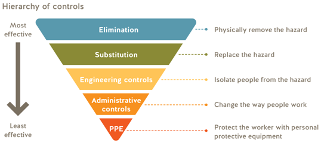

Contents
GENERAL REQUIREMENTS
G8.2(3) Responsibility to provide
G8.3 Ensuring adequate fit of personal protective equipment
G8.5 Program
G8.5(b) Special program option for pulp and paper industry
G8.10 Personal clothing and accessories
SAFETY HEADGEAR
G8.11(1) Safety headgear
G8.11(2) Activity specific safety headgear
G8.11(2)-1 Safety headgear standards
G8.11(2)-2 Activity specific safety headgear - Ski helmets
G8.11(3) Protection from electrical hazards
G8.11(4) Chin straps
G8.12/8.13 Use of safety headgear for workers on ATVs and similar equipment in agricultural operations
G8.13 Use of safety headgear with bicycles and skates
EYE AND FACE PROTECTION
G8.15(1) Prescription safety eyewear - Alternate standards [Retired]
G8.17(2) Face protection - Alternate standards [Retired]
LIMB AND BODY PROTECTION
G8.21 Leg protection [Retired]
G8.21(2) Leg protection - Alternate standards [Retired]
G8.21(2)-1 Leg protection - WorkSafeBC standards [Retired]
G8.21(2)-2 Leg protection - Alternate standard
FOOTWEAR
G8.22 Footwear
G8.22(2.1) High heels and healthy footwear
G8.22(3) Specific safety protective features
G8.22(3)-1 Footwear - Alternate standards
HIGH VISIBILITY AND DISTINGUISHING APPAREL
G8.24 High visibility apparel
G8.24-1 Alternative standards for high visibility apparel [Retired]
BUOYANCY EQUIPMENT
G8.26(3) Buoyancy equipment and fall protection
G8.27-1 Compliance with standards
G8.27-2 Alternative acceptable standard for buoyancy equipment
G8.28 Working alone or in isolation with a hazard of drowning
RESPIRATORS
G8.33-1 Respiratory protection - Selection
G8.33-2 Scott II and IIA SCBA regulator donning switch hazard [Retired]
G8.33(1) Selection of respiratory protection - Alternate standard [Retired]
G8.33(2)-1 Approved respirators
G8.33(2)-2 Interchange of equipment components [Retired]
G8.34-1 Protection factors
G8.34-2 Assigned protection factors for non-powered filtering facepiece style air-purifying respirators [Retired]
G8.34-3 Maximum use concentration and IDLH
G8.34-4 Protection factors - standard acceptable to WorkSafeBC
G8.34-5 Assigned protection factor for helmet/hood style powered air purifying respirators [Retired]
G8.35 IDLH or oxygen deficient atmophere
G8.38(2) Respiratory protection and use of contact lenses
G8.39 Effective seal for tight-fitting respirators
G8.40 Respiratory protection - Fit test
G8.40(2.1)(c) Single-use respirators and fit test equivalency
G8.41 User seal check - Alternate standard [Retired]
G8.42 Medical assessment
G8.44 Records [Retired]
G8.45 Maintenance and inspection of self-contained breathing apparatus
Guidelines - Part 8 - General Requirements
G8.2(3) Responsibility to provide
Issued August 1999; Editorial Revision February 1, 2008
Regulatory excerpt
Section 8.2(3) of the OHS Regulation ("Regulation") states:
If the personal protective equipment provided by the employer causes allergenic or other adverse health effects, the employer must provide appropriate alternative equipment or safe measures.
Purpose of guideline
The purpose of this guideline is to provide an example of selecting alternative equipment if the personal protective equipment provided by the employer causes allergic or other adverse health effects.
Appropriate alternative equipment
An example of selecting appropriate alternative equipment would be a worker allergic to natural rubber latex gloves, but who has work duties resulting in exposure to blood or other body fluids (a potential exposure to biological agents designated as a hazardous substance in section 5.1.1). In such a circumstance, the worker could use gloves made of vinyl, nitrile, neoprene, copolymer, or polyethylene, which would be appropriate alternatives to latex gloves for this particular exposure. See also OHS Guideline G6.34-2 for more information.
If a worker has an allergenic or other adverse health effect due to the protective equipment supplied and the remedy chosen is the use of "other safe measures," such measures have to provide at least equivalent protection to the worker that the personal protective equipment normally used would provide.
G8.3 Ensuring adequate fit of personal protective equipment
Issued November 29, 2022
Regulatory excerpt
Section 8.3(1) of the OHS Regulation ("Regulation") states:
(1) Personal protective equipment must
(a) be selected and used in accordance with recognized standards, and provide effective protection,
(b) not in itself create a hazard to the wearer,
(c) be compatible, so that one item of personal protective equipment does not make another item ineffective, and
(d) be maintained in good working order and in a sanitary condition.
Purpose of guideline
The purpose of this guideline is to assist employers understand their obligation to ensure personal protective equipment (PPE) provided under section 8.2 of the Regulation provides effective protection to workers and does not in itself create a hazard to the wearer.
Importance of proper fit
Protective clothing and other equipment are generally sized around the average height and proportions of men. This is because men have historically made up the majority of workers in industries that require PPE. When different sized garments are created, they are often based on the same relative proportions, and as such may not properly fit all body shapes and sizes. For example, smaller sizes may still not provide a proper fit for women, or for others whose bodies don’t conform to this "standard."
Improperly fitting PPE may not provide effective protection and may lead to preventable injuries caused by tripping, entanglement, distractions, or restricted movement. Furthermore, workers may be dissuaded from wearing PPE that is uncomfortable, makes accessing the toilet or personal hygiene difficult, or that increases the effort required to perform tasks. Difficulties in finding PPE that fits properly may result in workers leaving industries with PPE requirements.
The following table illustrates some examples of how poorly fitting PPE can lead to preventable injuries:
| Type of PPE | Signs of misfit | Potential hazards | Head and face — hard hats, welding helmets, face shields | • Cannot tighten (or loosen) enough to provide a good fit • May feel unbalanced and bulky, even when properly adjusted |
• Poor fit may cause pinch-points, headaches, neck or shoulder strain • May obstruct vision • May result in distraction |
| Eye protection — safety glasses and goggles | • Safety glasses may be too wide (or small) across, too long (or short) at the temple, and/or too big (or small) in the bridge area | • Glasses may slip down nose, leaving eyes and face exposed to hazards • Poor fit may create gaps in coverage, allowing debris to enter eyes • Fogging may impact vision • May result in distraction |
| Hearing protection | • Earplugs may be too large or too small for ear canal • Earmuffs may be too heavy or not adjustable enough to fit snugly and comfortably |
• PPE may fall out or off when moving • May fail to provide adequate protection from noise |
| Respiratory protection | • Tight fitting respirators may not achieve adequately seal with all faces • Poor fit may result in failed fit test (as required by section 8.40 of the Regulation) • May have to over-tighten straps or use strap attachments to achieve seal |
• Ineffective seal with face may result in exposure to hazardous substances and associated health effects • Over-tightening respirator straps to compensate for poor fit may result in headaches, skin irritation and injury, discomfort, and/or distraction • Discomfort as a result of poor fit may result in worker adjusting respirator while in use, decreasing effectiveness of seal • Attachments used to tighten respirator straps may loosen over time, resulting in loss of protection |
| Fall protection, climbing, rope access, rescue, harnesses | • Harnesses that are too large may be unable to tighten enough to fit body properly • Harnesses that are too small may be too tight and limit freedom of movement • Improper location or alignment of load-bearing straps or buckles • Workers with significant breast tissue may find standard harnesses uncomfortable and ineffective |
• Equipment that is too loose may result in serious injury in the event of a fall • Equipment that is too tight may hinder workers' movements and their ability to walk safely • Ineffective protection • Cross-over style harnesses may provide better adjustability, comfort and fit |
| Torso and limbs — coveralls, Tyvek suits, fire-resistant clothing, lab coats, high-visibility apparel, chainsaw pants | • Arms or legs that are too short or too long • Shoulder span that is too short or too long • Tightness or looseness of fit where the legs meet the torso • Shirts, jackets, or vests that will not close properly across chest or stomach, or gaping when closed due to an excess of fabric • Shirts, jackets, or vests that are too long or too short • One-piece suits that hinder personal hygiene requirements |
• Slipping or tripping • Entanglement in moving equipment • Restricted movement of arms or legs • May cause distractions • Inadequate protection • May discourage drinking and taking healthy washroom breaks (which can lead to heat stress, kidney problems, or other illnesses) |
| Hands | • Gloves that are too big or too small in finger length and palm width
• Gloves that are too wide or too loose at the wrist • May restrict circulation to hand, causing loss of dexterity |
• May get hung up or entangled in equipment • Extra fabric may require extra exertion and undue pressure on hands • May increase perspiration, leading to fatigue and related injuries • May allow debris to fall into glove |
| Feet | • Safety footwear that is too big or too small in ankle, foot shape, or arch placement • Safety footwear molded to an incorrect gender resulting in poor fit and proportion, including incorrect flex point |
• Lack of adequate toe protection • Tripping hazard • Poor arch support • Blisters, infections • Repetitive strain injuries • Poor posture • Plantar fasciitis • Fallen arches • Secondary injuries to knees, hips, spine, or neck |
Attempting to modify poorly fitting PPE may decrease or eliminate the equipment’s protective qualities, and may not be permitted under the applicable standards.
Ensuring fit
Section 8.3(1) of the Regulation requires PPE to be selected and used in accordance with recognized standards. Current versions of CSA standards for most PPE include requirements to ensure adequate fit.
WorkSafeBC prevention officers who observe workers wearing poorly fitting PPE may address this issue under sections 8.3(1)(a) or (b) of the Regulation, as applicable.
What employers can do
Employers should consider the physical characteristics of the workforce requiring PPE and stock appropriate sizes and models to ensure correct sizing and appropriate fit. Equipment suppliers may be able to assist employers and workers to identify PPE that fits properly through the provision of sizing charts, fitting samples, and fit instructions.
For additional information on fit requirements, including information on how to measure proper fit, employers should speak with equipment suppliers and refer to relevant safety standards. For example, the following CSA standards provide guidance on selection and use of certain protective equipment:
- CAN/CSA-Z96.1-08 Selection, Use and Care of High-Visibility Safety Apparel
- CAN/CSA-Z94.3.1-16 Selection, Use, and Care of Eye and Face Protectors
- CAN/CSA-Z259.17-16 Selection and Use of Active Fall-protection Equipment and Systems
- CAN/CSA-Z195.1-02 Selection, Care, and Use of Protective Footwear
Under the provision of section 8.9 of the Regulation, workers who are required to use PPE must use equipment in accordance with training and instruction, inspect equipment before use, and report any equipment malfunction to the supervisor or employer. In accordance with these requirements, workers should confirm that PPE fits, provides effective protection, does not create a hazard itself, and does not negatively impact their mobility or freedom of movement.
G8.5 Program
Issued August 1, 1999; Revised November 17, 2003; Editorial Revision to include February 1, 2011 regulatory amendment
Regulatory excerpt
Section 8.5 of the OHS Regulation ("Regulation") states:
If personal protective equipment is required to protect against a chemical exposure or an oxygen deficient atmosphere the employer must implement an effective protective equipment program at the workplace which includes
(a) a statement of purpose and responsibilities,
(b) written procedures for selection, use, inspection, cleaning, maintenance and storage of protective equipment, when required,
(c) instruction and training in the correct use and maintenance of the equipment,
(d) for respirators, medical assessment of respirator wearers, when required,
(e) documentation when required, and
(f) program review.
Purpose of guideline
The purpose of this guideline is to provide direction in determining if personal protective equipment is required in a chemical exposure or an oxygen-deficient atmosphere.
Personal Protective Equipment
To determine if personal protective equipment is required in a workplace to protect against a chemical exposure or an oxygen-deficient atmosphere, the employer has to consider the requirements of section 5.55 of the Regulation. Section 5.55(1) states "If there is a risk to a worker from exposure to a harmful substance by any route of exposure, the employer must eliminate the exposure, or otherwise control it below harmful levels and below the applicable exposure limit established under section 5.48...." Options available to the employer include substitution, engineering control, administrative control, or personal protective equipment. However, section 5.55(3) states: "The use of personal protective equipment as the primary means to control exposure is permitted only when
(a) substitution, or engineering or administrative controls are not practicable, or
(b) additional protection is required because engineering or administrative controls are insufficient to reduce exposure below the applicable exposure limits, or
(c) the exposure results from temporary or emergency conditions only."
For guidance in determining whether personal protective equipment is required, refer to OHS Guideline G5.55.
For guidance on determining if a medical assessment of a respirator wearer is required under paragraph 8.5(d), refer to OHS Guideline G8.42.
G8.5(b) Special program option for pulp and paper industry
Issued August 1, 1999; Editorial Revision June 30, 2021
Regulatory excerpt
Section 8.5(b) of the OHS Regulation ("Regulation") states:
8.5 If personal equipment is required to protect against a chemical exposure or an oxygen deficient atmosphere the employer must implement an effective protective equipment program at the workplace which includes…
(b) written procedures for selection, use, inspection, cleaning, maintenance and storage of protective equipment, when required
Purpose of guideline
The purpose of this guideline is to address a maintenance requirement for escape respirators used in the pulp and paper industry, specifically the replacement schedule for chemical cartridges used for protection against reduced sulfur gases, such as hydrogen sulfide, methyl mercaptan, dimethyl mercaptan, dimethyl sulfide and dimethyl disulfide. Escape respirators, except for workers required to ride in the pulp mill elevators, may be half facepiece respirators and mouthpiece, or biteblock respirators, and are used by mill personnel to escape to a safe area when the mill experiences a gas leak.
Escape respirators
The performance of escape cartridges in the pulp and paper environment was assessed in a study conducted by BC Research Incorporated, and the findings were published in June 1994, in a report entitled "Life Expectancy of Cartridges for Escape Respirators: Final Report", BCRI Project No. 4-02-394. Based on the findings of this study, the following guidelines are recognized as acceptable practice by WorkSafeBC. (This guide was initially published by the Prevention Division in a letter issued October 6, 1994, to the pulp and paper industry.)
The replacement schedule for chemical cartridges for use in escape respirators, in the pulp and paper industry only, may be extended to 12 months for unused, unexposed, and undamaged cartridges with the following provisos:
- A cartridge in an escape respirator is to be changed after use in an emergency involving exposure to mill gases
- Each cartridge is to be marked to show clearly its expiry date
- A metal type cartridge is to be inspected prior to installation for dents in the base or threads
- Any damaged unit is to be replaced
Respiratory protection program
Each pulp and paper mill is expected to have a comprehensive respiratory protection program, functioning as required by section 8.5 of the Regulation. This is achieved when all workers who are, or may be, required to use a respirator are trained to an acceptable level of competency and all the elements of the program are in place covering correct use, limitations, maintenance and storage requirements for the devices selected.
For respirator use in industries other than pulp and paper mills, the employer must follow the respirator manufacturer's recommendations for cartridge replacement schedules.
G8.10 Personal clothing and accessories
Issued August 1, 1999; Revised September 22, 2015
Regulatory excerpt
Section 8.10(1) of the OHS Regulation ("Regulation") states:
The personal clothing of a worker must be of a type and in a condition which will not expose the worker to any unnecessary or avoidable hazards.
Purpose of guideline
This guideline provides clarification and examples of the regulatory requirements for personal clothing.
Clarifications for personal clothing
Under this section, the type and condition of clothing is a concern if a worker is exposed to injury from the material being handled, contact with an abrasive surface or object, or contact with a surface at a temperature that could cause a burn injury. For example, a worker handling hot tar or other material that could cause a burn through splashing, fuming, or radiant heat must wear suitable clothing covering the body and arms. A worker exposed to the abrasive action of material, such as the carrying of lumber on the shoulder or against the body, must wear appropriate clothing.
A worker may have to change or add clothing as the worker's job duties or work conditions change.
An employer may have a dress code or policy for clothing requirements during warm weather. WorkSafeBC prevention officers will not enforce an employer's policy of this type. Prevention officers will become involved in enforcement if the lack of appropriate clothing is exposing a worker to any unnecessary or avoidable hazards.
Removal of clothing during outdoor work in warm weather exposes workers to UV from the sun. Ultraviolet radiation from the sun is a "natural element," and under paragraph 8.2(1)(a) of the Regulation, a worker is responsible for providing any necessary clothing to protect against it. Workers and employers need to be aware of the hazard from solar radiation, and need to take measures to limit exposure, such as by use of appropriate attire and the use of sun block creams.
Guidelines - Part 8 - Safety Headgear
G8.11(1) Safety headgear
Issued September 1, 2021; Revised May 9, 2022
Regulatory excerpt
Section 8.11(1) of the OHS Regulation ("Regulation") states:
(1) Before a worker starts a work assignment in a work area where there is a risk of head injury to the worker from falling, flying or thrown objects, or other harmful contacts, the employer must take measures to
(a) eliminate the risk, or
(b) if it is not practicable to eliminate the risk, minimize the risk to the lowest level practicable by applying the following control measures in order of priority:
(i) engineering controls;
(ii) administrative controls;
(iii) requiring the worker to wear safety headgear.
Purpose of guideline
The purpose of this guideline is to provide information on identifying the risk of head injury from falling, flying, or thrown objects, or other harmful contacts, and controlling the risk by following the hierarchy of controls. This guideline also provides information about what to do if workers have concerns about the appropriateness of the control measures selected.
Background
Controlling exposures to hazards in the workplace is fundamental to protecting workers, but often personal protective equipment (PPE) such as safety headgear is used as a blanket first line of defense from a serious safety hazard. The Sikh community has raised concerns that those employers who use safety headgear as a blanket safety requirement are excluding turban-wearing Sikh workers from being able to fully participate in the workforce.
PPE is considered the least effective control measure as it does not eliminate a hazard but merely puts a barrier between the hazard and the worker. Following the hierarchy of controls ensures measures such as elimination, engineering controls, and administrative controls are applied before relying on safety headgear.
Worker participation
Creating and managing a safe and healthy workplace involves everyone. For workers to be truly engaged in health and safety, they need to know their employer and supervisor value their well-being and their input. Consult with workers in the identification of any workplace hazards and in assessing the risks of injury as they will have direct knowledge of workplace conditions.
Identify hazards, and assess and control risks
To help eliminate or reduce the risk of head injury, employers, in consultation with their workers, can take these steps:
- Identify the hazards
- Assess the risks
- Control the risks
The first step is to determine if there are any hazards that may cause a head injury to a worker. A "hazard" is anything with the potential to cause an injury to a worker. An example of a hazard would be any tool or other object that could fall on a worker from above. Consider the workplace and its layout, as well as the work tasks or activities that pose hazards to workers.
A "risk" is the chance of injury when an individual is exposed to a hazard. In determining the level of risk a hazard poses, the following factors are considered:
- What kind of injury or illness could be suffered, and how severe would it most likely be?
- How long workers are typically exposed to the hazard? The longer the exposure, the higher the risk.
- How frequent is the exposure? If the task is repeated many times each shift, it carries more risk than a task done only occasionally.
Examples include if there is a risk of a worker being struck by a falling tool or other object, or if there is a potential for workers to enter an area where the hazard exists.
Where a hazard exists and there is a risk of injury to any worker, the employer must take reasonable measures to eliminate that risk. Eliminating the dangers of worker head injury eliminates the need for head protection. If it is not reasonably practicable to eliminate the risk, the employer must continue to follow the hierarchy of controls and minimize the risk to the lowest level practicable.
For further information on hazard identification, risk management, and controls please refer to Managing risk webpage on worksafebc.com.
The hierarchy of controls
The hierarchy of controls is a system for controlling risk in the workplace. It is a step-by-step approach to eliminating or reducing risks, and it ranks risk controls from the highest level of protection and reliability to the lowest. The hierarchy of controls, in the order of priority, is shown below.
While the controls are listed in order of effectiveness, reducing the risk may involve using a single risk control or two or more different controls in combination. For example, first responders may encounter circumstances where the risks cannot be completely eliminated before entering a burning building, but engineering controls, administrative controls, and/or PPE can be used to minimize the risks to workers.

1-2 Elimination or substitution
The most effective control measure involves eliminating the hazard and its associated risk. Eliminating the dangers of worker head injury eliminates the need for head protection. Substitution involves replacing the material or process with a less hazardous one.
When considering these options, determine if there is a safer way to perform the task. For example, if materials need to be delivered to a construction site where there is a risk of head injury to the worker from falling, flying, or thrown objects, can a safe zone be set up on the site where no risk exists? This is an example of an elimination control measure removing the hazard and its associated risk.
3 Engineering controls
If it is not practicable to eliminate the hazards or if there are no safer alternatives, engineering controls are the next best option. These involve using work equipment or other means to prevent workers from being exposed to a hazard. Engineering controls are physical changes to the workplace. Engineering controls focused on head injury risks may include measures such as the following:
- Safety nets to prevent objects from falling
- Temporary or permanent solid barriers to prevent objects from falling, being thrown, or sent flying from work areas
- Temporary or permanent barriers to prevent workers from entering hazard areas
- Tethering and securing tools, materials, and equipment so they cannot fall
- Changing the workplace so workers do not need to enter areas where a risk of head injury exists — for example, in a manufacturing plant, ensuring manual assembly or packing areas are separated from the areas where overhead bridge cranes operate
4 Administrative controls
Administrative controls involve identifying and implementing safe work procedures so workers can perform their job duties safely. The assessment will form the basis of these safe work procedures, which may include the following:
- Procedures requiring work to stop when other workers are beneath their work areas
- Creating work practices that eliminate the exposure to the hazard — for example, workers delivering materials by truck to a worksite with overhead hazards may need to be restricted to a designated area where no overhead hazard exists
- Creating designated pedestrian walkways that keep workers out of head injury hazard zones — this would be similar to those used in distribution warehouses for forklift traffic
- Using signs to alert workers to overhead hazard areas, and provision for safety headgear for entering those areas
- Using spotters to alert workers to vacate areas when moving elevated loads or long loads that have the potential to fall or swing and strike a worker — for example, on an industrial site where a stinger is moving a long pipe, or a fabrication shop where an overhead crane is moving a steel beam section
5 Personal protective equipment
PPE is another important control to protect workers and refers to anything workers use or wear to minimize risk to a hazard. However, PPE, such as safety headgear, provides the lowest level of protection and should ideally be used in combination with other control measures. Safety headgear such as hard hats must be worn by workers if it is not practicable to eliminate the risk of head injury, or engineering and/or administrative controls are not adequate to minimize the risk of head injury to the lowest level practicable.
An example of where safety headgear may be necessary is if the work environment is constantly changing and it is not possible to use engineering or administrative controls to minimize the hazards to the level needed to protect workers from the risk of head injury.
Employers must take reasonable measures to eliminate or control those hazards for which PPE is required, including safety headgear.
Document, communicate, and review the safety headgear assessment
Employers have a duty under the Workers Compensation Act to provide workers with the information, instruction, training, and supervision necessary to ensure their health and safety. Documenting and communicating the assessment and controls to everyone affected will help employers meet these obligations. A failure to do so severely undermines a worker’s knowledge of the risks that may be encountered in their work environment.
Communicate with:
- All affected workers, particularly if the controls involve changes in their work processes (e.g., use of spotters, new signage to be followed, tethering tools and materials)
- Supervisors of affected workers
- The joint health and safety committee (or worker health and safety representative), if applicable
- All other people (e.g., visitors, clients) who need to follow safety procedures in areas with a risk of head injury
Monitor and update
Managing workplace risks is an ongoing process. Employers need to monitor the effectiveness of the control measures in place and improve those that are not working as intended. Continue to engage workers throughout the monitoring and updating of the risk management plan.
Role of WorkSafeBC prevention officers
If a worker has a concern about the measures taken to eliminate or reduce the hazard they should first speak to their employer or supervisor to determine if further control measures are possible. If there is still a concern regarding the appropriateness of the control measure(s) selected, the worker or employer may choose to call a prevention officer for assistance. In these circumstances, the prevention officer will review the employer's assessment and determine whether the hierarchy of controls has been followed and applied before relying on safety headgear.
In some situations, employers may have to balance their health and safety obligations with their obligations under human rights legislation. For more information on this please refer to OHS Guideline G-P2-21(1).
Additional resources
To help with assessing and controlling the risks of head injury in the workplace, WorkSafeBC has developed a resource, Safety headgear: Assessing and controlling risk of head injury. A Safety headgear: Risk management template is also available to help document workplace risks and the steps to take to control those risks.
Safety headgear: Rights and responsibilities is also available for workers, with information on their rights and what they can do if they have a concern with an employer's application of section 8.11 of the Regulation in their workplace. This resource includes a process map that outlines what workers can do if they have concerns with the employers' decision to rely on safety headgear.
G8.11(2) Activity specific safety headgear
Issued August 1, 1999; Editorial Revision April 2005; Revised August 1, 2013; Editorial Revision consequential to February 1, 2015 Regulatory Amendment; Editorial Revision consequential to June 3, 2019 Regulatory Amendment; Editorial Revision consequential to September 1, 2021 Regulatory Amendment
Regulatory excerpt
Section 8.11 of the OHS Regulation ("Regulation") states:
(1) Before a worker starts a work assignment in a work area where there is a risk of head injury to the worker from falling, flying or thrown objects, or other harmful contacts, the employer must take measures to
(a) eliminate the risk, or
(b) if it is not practicable to eliminate the risk, minimize the risk to the lowest level practicable by applying the following control measures in order of priority:
(i) engineering controls;
(ii) administrative controls;
(iii) requiring the worker to wear safety headgear.
(2) Safety headgear must meet the requirements of one of the following standards:
(a) CSA Standard CAN/CSA-Z94.1-05 or CAN/CSA-Z94.1-15, Industrial protective headwear – Performance, selection, care, and use;
(b) ANSI Standard ANSI/ISEA Z89.1-2009 or ANSI/ISEA Z89.1-2014, American National Standard for Industrial Head Protection.
Section 4.4(2)(a) of the Regulation states:
(2) When this Regulation requires a person to comply with
(a) a publication, code or standard of the Board or another agency, the person may, as an alternative, comply with another publication, code or standard acceptable to the Board …
Purpose of guideline
This guideline outlines alternate standards for safety headgear for specific types of activities and describes when they are applicable.
Acceptable standards
WorkSafeBC accepts the following alternate standards for safety headgear designed for specific types of activity:
- Union of International Alpine Association Standard (UIAA) Standard 106 Mountaineering and Climbing Equipment Helmets "Rock Climbers Helmets" (for emergency rescue operations, rock scaling, silviculture operations, window washers, and workers doing boatswain's chair work)
Headgear meeting this standard protects against blunt impact hazards to the head, but must not be used in place of conventional safety headgear whenever the ventilation holes may expose the worker to hazards from small rigid objects such as nails or if flame resistance is required.
- CAN/CSA Z262.1-M90 (R2007) Ice Hockey Helmets (for on-ice activities)
- CAN/CSA Z611-M86 Police Riot Helmets and Face Shield Protection (for crowd control/riot squad duties)
Since helmets meeting these three standards are not made or tested for dielectric properties, they are not suitable for environments where exposed energized electrical wires or equipment may be present.
This guideline and these standards do not apply to ski helmets. Please refer to OHS guideline G8.11(2)-2 Activity specific safety headgear — Ski helmets.
G8.11(2)-1 Safety headgear standards
Issued September 21, 2012; Revised consequential to June 3, 2019 Regulatory Amendment
Regulatory excerpt
Section 8.11(2) of the OHS Regulation ("Regulation") states:
(2) Safety headgear must meet the requirements of one of the following standards:
(a) CSA Standard CAN/CSA-Z94.1-05 or CAN/CSA-Z94.1-15, Industrial protective headwear – Performance, selection, care, and use;
(b) ANSI Standard ANSI/ISEA Z89.1-2009 or ANSI/ISEA Z89.1-2014, American National Standard for Industrial Head Protection.
Purpose of guideline
The purpose of this guideline is to help clarify the requirements in the approved standards around the use of Type 1 or Type 2 safety headgear.
Acceptable standards
Both 2005 CSA Standard and 2009 ANSI Standard classify safety headgear into two types: Type 1 and Type 2. Type 1 safety headgear provides protection from impacts and sharp objects from above. Type 2 safety headgear provides protection from impacts and sharp objects from above and sides. WorkSafeBC permits the use of both types of safety headgear providing the other requirements in the applicable standards are met.
Type 2 safety headgear provides more protection where there is a possibility of objects striking the side of the head.
G8.11(2)-2 Activity specific safety headgear — Ski helmets
Issued August 1, 2013; Editorial Revision consequential to June 3, 2019 Regulatory Amendment; Editorial Revision consequential to September 1, 2021 Regulatory Amendment
Regulatory excerpt
Sections 8.11(1) and (2) of the OHS Regulation ("Regulation") state:
(1) Before a worker starts a work assignment in a work area where there is a risk of head injury to the worker from falling, flying or thrown objects, or other harmful contacts, the employer must take measures to
(a) eliminate the risk, or
(b) if it is not practicable to eliminate the risk, minimize the risk to the lowest level practicable by applying the following control measures in order of priority:
(i) engineering controls;
(ii) administrative controls;
(iii) requiring the worker to wear safety headgear.
(2) Safety headgear must meet the requirements of one of the following standards
Section 8.3(2) of the Regulation states:
If the use of personal protective equipment creates hazards equal to or greater than those its use is intended to prevent, alternative personal protective equipment must be used or other appropriate measures must be taken.
Section 4.4(2)(a) of the Regulation states:
(2) When this Regulation requires a person to comply with
(a) a publication, code or standard of the Board or another agency, the person may, as an alternative, comply with another publication, code or standard acceptable to the Board …
Purpose of guideline
The purpose of this guideline is to clarify the requirements for safety helmets for workers engaged in skiing or snowboarding, and to identify acceptable alternate standards for these helmets.
Use of helmets for skiing or snowboarding
Section 8.11(1) of the Regulation states that, where there is a risk of head injury from harmful contacts, employers must attempt to eliminate or minimize those risks. If the risk cannot be eliminated or minimized, workers must wear safety headgear.
Work activities performed while engaging in alpine, or downhill, skiing or snowboarding present a danger of harmful contacts. These harmful contacts include possible contact with the ground, moving or stationary objects, and other persons. Risks of harmful contacts cannot be easily eliminated or minimized in this type of environment. Accordingly, workers engaged in sliding activities will usually be required to wear safety headgear.
In ski areas, examples of workers typically engaged in skiing or snowboarding include ski patrollers, ski instructors, avalanche control workers, and workers transiting on skis or snowboards between work locations.
Acceptable standards
Section 8.11(2) lists standards that safety headgear must meet. In addition, section 4.4(2)(a) permits the reliance on other standards that are acceptable to WorkSafeBC. WorkSafeBC has identified the following standards for safety headgear for skiing and snowboarding work activities as acceptable for use by workers:
- CE-EN1077 Helmets for alpine skiers and snowboarders — Class A or Class B
- ASTM F2040 Helmets Used for Recreational Snow Sports
- Snell RS-98 Protective Headgear for Recreational Skiing and Snowboarding
Risk assessment
Where an employer can show that a particular sliding activity is performed in a way that the danger of harmful contacts is not present, or the risk has been minimized to the lowest level practicable, workers may perform that activity without headgear. In making such a determination, the employer is required to perform a thorough risk assessment showing that the danger of harmful contacts is not present.
Employers should consider whether wearing safety headgear for a particular activity where headgear would normally be required, would itself create a hazard to the worker in the circumstances. As stated in section 8.3(2), personal protective equipment must not itself create a hazard to the wearer. For example, a worker engaged in avalanche control blasting whose ability to communicate clearly with co-workers is impaired by headgear, may need to remove it for the duration of that activity.
G8.11(3) Protection from electrical hazards
Issued August 1, 1999; Editorial Revision consequential to June 3, 2019 Regulatory Amendment
Regulatory excerpt
Section 8.11(3) of the OHS Regulation ("Regulation") states:
If a worker may be exposed to an electrical hazard the safety headgear must have an appropriate non-conductive rating.
Purpose of guideline
The purpose of this guideline is to define the appropriate type of safety headgear required under section 8.11(3) of the Regulation when a worker may be exposed to electrical hazards.
Background
Only electricians, powerline technicians (formerly known as linemen), and certified utility arborists will normally be exposed to electrical hazards, which result when exposed and energized electric wires or electrical equipment is present in the workplace. Firefighters may be exposed to electrical hazards during fire or other emergency incidents, and their headwear requirements during such activity are specified in Part 31 of the Regulation.
The CSA (CAN/CSA-Z94.1-05 and CAN/CSA-Z94.1-15) and ANSI (ANSI/ISEA Z89.1-2009 and ANSI/ISEA Z89.1-2014) Standards for safety headgear designate headgear as Class G (General) for a dielectric test rating, when new, of 2,200 volts.
The CSA (CAN/CSA-Z94.1-05 and CAN/CSA-Z94.1-15) and ANSI (ANSI/ISEA Z89.1-2009 and ANSI/ISEA Z89.1-2014) Standards for safety headgear designate headgear as Class E (Electrical) for a dielectric test rating, when new, of 20,000 volts.
Both the CSA and ANSI standards warn that dielectric rated headgear is intended to reduce risks arising from accidental contact with energized electrical equipment, not to provide a primary means of insulating a worker from intentional contact with such equipment.
Appropripate dielectric rating
An electrician working only on "residential type" circuits, of 240 volts or less, may wear Class A, B, G, or E rated CSA or ANSI safety headgear. This upper voltage limit for work around residential type circuits may seem conservative, but the 2,200 volt dielectric rating for these classes of headgear is achieved when testing a new sample, and the protection degrades with use and is also dependant on the cleanliness of the headgear.
Powerline technicians, electricians, and any other workers who work on circuits that have the potential for voltages above 240 volts need to wear Class B or E rated CSA or ANSI headgear, or equivalent.
Class C (Conductive) CSA or ANSI safety headgear does not provide dielectric protection. Any safety headgear that has had holes drilled in the shell to install accessories is considered to have lost its dielectric rating. Workers (other than electricians, certified utility arborists or powerline technicians who should not be exposed to energized electric wires or equipment in the normal course of their work), may wear headgear with whatever class of dielectric protection they desire. If workers receive special training and are given work assignments requiring work near exposed energized electrical sources, they must have and wear headgear with the appropriate dielectric rating. For example, workers assigned to clean and paint utility poles may be exposed to electrical hazards, and should wear electrically protective headgear.
G8.11(4) Chin straps
Issued August 1, 1999; Editorial Revision consequential to June 3, 2019 Regulatory Amendment
Regulatory excerpt
Section 8.11(4) of the OHS Regulation ("Regulation") states:
Chin straps or other effective means of retention must be used on safety headgear when workers are climbing or working from a height exceeding 3 m (10 ft), or are exposed to high winds or other conditions that may cause loss of the headgear.
Purpose of guideline
This guideline outlines that chin straps are an effective means for the retention of safety headgear as required by section 8.11(4) of the Regulation.
Background
Industrial safety headgear has traditionally been designed and tested to provide protection from an impact directed more or less downward onto the top of the head. The CSA Standard CAN/CSA-Z94.1-92 introduced a new requirement for protection of the head from an impact landing on the side of the head. This was in response to injury studies that indicated a significant incidence of injury due to people being struck on the side of the head by objects, even when wearing a safety headgear. During the development of the Regulation, expert advice provided to the Personal Protective Equipment Subcommittee drew attention to the severity and high cost of head injuries, particularly the many injuries which result from an impact to the side of the head. This type of head injury will typically occur when someone falls and strikes the floor, ground, or some other object. Head protection must remain in place on the head to provide any protection when the head strikes something during or at the end of a fall. This is the reason why bicycle helmets and headgear for many other sports have a chin strap. The expert advice to the regulation development process was industrial safety headgear should have a mandatory headgear retention criteria, to assist with keeping safety headgear in place during work, including the headgear remaining effectively in place during a fall. Hence, section 8.11(4) was established.
Criteria of safety headgear
This section has three main objectives:
- To keep safety headgear in place on the wearer's head during a fall.
- To keep safety headgear from becoming a falling object and a danger to workers working below.
- To ensure the worker remains protected by safety headgear while doing work tasks. (For example, a rock scaler losing the safety headgear part way down a rappel of a rock face would have to descend the rest of the way down the rock face without head protection to recover the hat or get a replacement.)
Headgear may be accidentally knocked off a worker's head in any situation. Generally speaking, a means of retention should be used when the circumstances of the work create a likelihood of the loss of the headgear. Some examples are work on a ladder or scaffold over 10 feet high, or during work in an area with high wind (either natural wind or wind created by equipment such as a helicopter). Generally it is not expected a chin strap would need to be worn by a worker on a floor or deck enclosed by guardrails.
Retention test
CSA Standards Z94.1-05 and Z94.1-15 specify a retention test for hard hats that is intended to evaluate the stability of the headgear during normal use. The standard states that the "test does not assess the ability of the headgear to remain in place during extreme conditions (e.g., windy conditions, during an impact or fall)." Therefore, headgear meeting this aspect of the CSA standard does not automatically comply with section 8.11(4). At this time, for the purposes of section 8.11(4), a chin strap system is an effective means known to WorkSafeBC for the retention of safety headgear.
G8.12/8.13 Use of safety headgear for workers on ATVs and similar equipment in agricultural operations
Issued May 25, 2005; Editorial Revision June 30, 2021; Editorial Revision August 20, 2025; Editorial revision consequential to regulatory amendment to s. 8.13(1) April 1, 2026.
Regulatory excerpt
Section 8.12 of the OHS Regulation ("Regulation") states:
(1) Operators and passengers on all-terrain vehicles, snowmobiles and motorcycles must wear headgear meeting the requirements of
(a) CSA Standard CAN3-D230-M85, Protective Headgear in Motor Vehicle Applications,
(b) British Safety Institution Standard BS5361.1976, Specification: Protective Helmets for Vehicle Users, (as amended to 1981),
(c) Snell Memorial Foundation 1995 Standard for Protective Headgear for Use with Motorcycles and Other Motorized Vehicles, or
(d) US Federal Standard for Motorcycle Helmets (Title 49 — Transportation — Part 571.218).
(2) Headgear in good condition meeting earlier editions of a standard listed in subsection (1) may remain in service if purchased before April 15, 1998.
(3) When an all-terrain vehicle is operated within a specific location, with no rollover hazard area and no area containing a significant hazard that may cause loss of control and at a speed not exceeding 20 km/h (13 mph), safety headgear meeting the requirements of section 8.13 may be used in place of headgear specified in subsection 8.12(1).
Section 8.13 of the Regulation states:
(1) A worker riding a bicycle or using in-line skates or similar means of transport must wear headgear meeting the requirements of
(a) CSA Standard CAN/CSA-D113.2-M89, Cycling Helmets,
(b) Snell Memorial Foundation 1994 Standard for Protective Headgear for Use in Non-Motorized Sports
(c) Snell Memorial Foundation 1995 Standard for Protective Headgear for Use in Bicycling.
(d) Repealed. [B.C. Reg. 312/2003, effective October 29, 2003.]
(e) American Society for Testing and Materials Standard ASTM F1447-06 (Standard Specification for Helmets Used in Recreational Bicycling or Roller Skating), or
(f) Snell Memorial Foundation Standard B-90A (1998 Augmentation to the 1990 Standard for Protective Headgear).
(2) If a bicycle or similar conveyance is operated at speeds not exceeding 20 km/h (13 mph) within a specific location, safety headgear meeting the requirements of section 8.11 is acceptable when worn with a chin strap.
Section 1.1 of the Regulation states, in part:
…
"rollover hazard area", with respect to mobile equipment, means an area that is comprised of
(a) grades or slopes that exceed
(i) the manufacturer’s maximum slope operating stability limit for the mobile equipment, or
(ii) 10%, if the manufacturer has not set a maximum slope operating stability limit for the mobile equipment, or
(b) open edges, open ramps, loading docks, ditches, drop-offs, holes, soft spots or mounds, or other terrain hazards, that may cause a rollover;
…
Purpose of this guideline
This guideline provides information on the requirements for safety headgear, under sections 8.12 and 8.13 of the OHS Regulation ("Regulation"), when workers use various types of small mobile equipment and other conveyances in agricultural operations. (Note that the responsibilities for providing safety headgear and other personal protective equipment are covered in section 8.2 of the Regulation.)
ATVs, snowmobiles, and motorcycles
These types of equipment are often used for work purposes in farming or ranching operations. Section 8.12(1) requires workers on such mobile equipment to wear head protection which meets at least one of the listed Canadian, American, or British standards. These standards are common, and suppliers will typically have headgear that is compliant.
Section 8.12(2) recognizes that older helmets may in some cases meet an earlier edition of the protective standard listed in the Regulation. In addition, it should be noted that under section 4.4 of the Regulation, WorkSafeBC can consider other standards as well. A farmer or rancher who would like to have an alternative standard considered should contact WorkSafeBC for a review of it.
For workers on ATVs, section 8.12(3) also permits the use of helmets meeting the bicycle and other non-motorized sports helmet standards listed in section 8.13(1), if the ATV is operated at speeds not exceeding 20 km per hour (13 mph) within a specific location where there is no rollover hazard area.
A "specific location" is defined in the Regulation as "a yard, plant, or other clearly defined and limited area in which mobile equipment is operated, but does not include an entire municipality, district, transient forestry operation or construction site." This definition indicates a specific location would be a particular defined area of a ranch or farm in which mobile equipment is used, rather than the whole property, unless the property was relatively restricted in size. Typically, such areas might be those in the vicinity of the dwellings, outbuildings, and nearby areas frequently used by mobile equipment.
A key factor is that the area must have no "rollover hazard area," which is defined in section 1.1 of the Regulation. In the case of ranches, the slope criterion will often be a limiting factor. On farms, areas adjacent to drainage or irrigation ditches would be considered to be rollover hazard areas.
Bicycles and similar conveyances
Bicycles are used in some agricultural operations such as greenhouses. When using bicycles, or similar conveyances such as in-line skates, section 8.13(1) requires that the worker wear safety headgear meeting one of the standards listed. The standards are common, and suppliers will usually have headgear that is compliant.
In lower hazard circumstances, section 8.13(2) permits the use of "hard hats" with chin straps. To permit this use of a lower standard of protection, the bicycle is to be operated at speeds of not more than 20 km per hour (13 mph), within a specific location. Greenhouses are considered to be a specific location.
Utility vehicles
Sections 8.12 and 8.13 do not require the use of safety headgear while riding in utility vehicles or other such equipment not identified in the requirements. A utility vehicle typically has a steering wheel and seating that permits two persons to sit side by side, in contrast to an ATV which is equipped with a handle bar and a straddle seating arrangement. Examples of utility vehicles include "Gators" and "Argos".
In addition to the requirements of sections 8.12 and 8.13, section 4.3(1) of the Regulation requires that equipment be operated in conformity with manufacturers' instructions. If such instructions for utility vehicles require the use of safety headgear, then it is appropriate to select headgear meeting a standard listed in section 8.12. In all cases, to help ensure safety the operator should ensure the utility vehicle is operated in accordance with manufacturers' instructions, at prudent speeds, avoiding holes, debris and steep slopes.
Recreational use
Sections 8.12 and 8.13 apply only to the use of conveyances for work purposes. They do not apply to the personal use of such equipment for recreational purposes. When engaged in recreational use, people must comply with protective helmet requirements of the public authority with jurisdiction. Even if safety headgear is not required, it is recommended, for the purposes of safety, that it be worn.
8.13 Use of safety headgear with bicycles and skates
Issued June 30, 2021; Editorial Revision consequential to April 1, 2026 Regulatory Amendment
Regulatory excerpt
Section 8.13(1) of the OHS Regulation ("Regulation") states:
(1) A worker riding a bicycle or using in-line skates or similar means of transport must wear headgear meeting the requirements of
(a) CSA Standard CAN/CSA-D113.2-M89, Cycling Helmets,
(b) Snell Memorial Foundation 1994 Standard for Protective Headgear for Use in Non-Motorized Sports
(c) Snell Memorial Foundation 1995 Standard for Protective Headgear for Use in Bicycling.
(d) Repealed. [B.C. Reg. 312/2003, effective October 29, 2003.]
(e) American Society for Testing and Materials Standard ASTM F1447-06 (Standard Specification for Helmets Used in Recreational Bicycling or Roller Skating), or
(f) Snell Memorial Foundation Standard B-90A (1998 Augmentation to the 1990 Standard for Protective Headgear).
Section 4.4(2)(a) of the Regulation states:
(2) When this Regulation requires a person to comply with
(a) a publication, code or standard of the Board or another agency, the person may, as an alternative, comply with another publication, code or standard acceptable to the Board …
Purpose of guideline
Section 4.4(2)(a) of the Regulation provides WorkSafeBC the authority to accept alternative standards to those listed in the Regulation. The purpose of this guideline is to identify alternative bicycle helmet standards acceptable to WorkSafeBC.
Alternative standards
When using bicycles, or similar conveyances such as in-line skates, section 8.13(1) requires that the worker wears safety headgear meeting one of the standards listed. Alternative bicycle helmet standards acceptable to WorkSafeBC include the following:
- American Society for Testing and Materials Standard ASTM F1447-94 (Standard Specification for Protective Headgear Used in Bicycling), as amended from time to time up to the date of the standard accepted by way of regulation.
- Snell Memorial Foundation Standard N-94 (1994 Standard for Protective Headgear for Use in Non-Motorized Sports), as amended from time to time
- Snell Memorial Foundation Standard B-95 (1995 Standard for Protective Headgear for Use with Bicycles), as amended from time to time
- Snell Memorial Foundation Standard B-90 (1990 Standard for Protective Headgear for Use in Bicycling), as amended from time to time up to the date of the standard accepted by way of regulation.
The United States Consumer Product Safety Commission (CPSC) bike helmet standard is required by law in the United States. A CPSC sticker on a bike helmet is an indication that it meets the ASTM F1447-94 standard.
Guidelines - Part 8 - Eye and Face Protection
G8.15(1) Prescription safety eyewear – Alternate standards
Issued June 18, 2008; Revised May 9, 2014; Retired consequential to June 3, 2019 Regulatory Amendment
G8.17(2) Face protection - Alternate standards
Issued July 9, 2009; Revised October 28, 2015; Retired consequential to June 3, 2019 Regulatory Amendment
Guidelines - Part 8 - Limb and Body Protection
G8.21 Leg protection
Issued August 1, 1999; Editorial Revision October 2004; Retired May 31, 2021
G8.21(2) Leg protection - Alternate standards
Retired February 1, 2011
This guideline is not required since the referenced alternative standards have been incorporated into OHS Regulation section 8.21.
G8.21(2)-1 Leg protection - WorkSafeBC standards
Issued February 1, 2011; Retired June 30, 2021
G8.21(2)-2 Leg protection - Alternate standard
Issued May 29, 2018
Regulatory excerpt
Section 8.21(2) of the OHS Regulation ("Regulation") states:
(2) Leg protective devices referred to in subsection (1) must meet or exceed
(a) the general requirements of section 4 of the WorkSafeBC Standard - Leg Protective Devices, as set out in Schedule 8-A of this Part, and
(b) the performance requirements of one of the following standards, using the cut-resistance testing protocol set out in that standard except as varied in subparagraph (ii):
(i) WorkSafeBC Standard - Leg Protective Devices, as set out in section 5 of Schedule 8-A of this Part, applying a threshold chain speed of 18.3 metres per second or 3 600 feet per minute;
(ii) ASTM F 1414-04 Standard Test Method for Measurement of Cut Resistance to Chain Saw in Lower Body (Legs) Protective Clothing, but applying a threshold chain speed of 16.8 metres per second or 3 300 feet per minute;
(iii) ISO 11393-2 Protective clothing for users of hand-held chain-saws - Part 2: Test methods and performance requirements for leg protectors, applying a Class 2 threshold chain speed of 24 metres per second or 4 724 feet per minute;
(iv) BS EN 381-5:1995 Protective clothing for users of hand-held chain saws - Part 5: Requirements for leg protectors, applying a Class 2 threshold chain speed of 24 metres per second or 4 724 feet per minute.
Section 4.4(2) of the Regulation states:
(2) When this Regulation requires a person to comply with
(a) a publication, code or standard of the Board or another agency, the person may, as an alternative, comply with another publication, code or standard acceptable to the Board...
Purpose of guideline
The purpose of this guideline is to specify, for the purposes of section 8.21(2) of the Regulation, an alternate standard acceptable to WorkSafeBC for leg protection devices.
Acceptable standards
Section 4.4(2)(a) permits WorkSafeBC to accept another standard as an alternative to one referred to in the Regulation. WorkSafeBC had determined that ASTM F1414-15 is an acceptable alternate standard under section 8.21(2), when applying a threshold chain speed of 16.8 metres per second or 3,300 feet per minute.
Guidelines - Part 8 - Footwear
G8.22 Footwear
Issued August 1, 1999
Regulatory excerpt
Section 8.22(1) of the OHS Regulation ("Regulation") states:
A worker's footwear must be of a design, construction, and material appropriate to the protection required and that allows the worker to safely perform the worker's work.
Section 8.22(2) of the OHS Regulation states:
(2) To determine appropriate footwear under subsection (1), the following factors must be considered:
(a) slipping;
(b) tripping;
(c) uneven terrain;
(d) abrasion;
(e) ankle protection and foot support;
(f) potential for musculoskeletal injury;
(g) crushing potential;
(h) temperature extremes;
(i) corrosive substances;
(j) puncture hazards;
(k) electrical shock;
(l) any other recognizable hazard.
Purpose of guideline
The purpose of this guideline is to outline the requirement that the employer must determine the appropriate protection required for the feet and ankles based on the work assigned to each worker, and ensure each worker wears appropriate footwear, as stated in sections 8.22(1) and (2) of the Regulation.
Assessment
The assessment is based on whatever work procedures and arrangements exist in the workplace at any time. An employer may change the work procedures and arrangements to reduce or remove the risk. For example, an employer may limit the number of workers doing tasks that cause a risk of foot injury. Alternatively, the employer may change the way the tasks are done. Protective footwear need only be worn while a worker is exposed to the risk that requires it.
When determining the requirements for appropriate protective footwear, an employer should not consider training and supervision as a substitute for protective footwear.
The risk assessment to determine appropriate footwear will result in persons or activities being placed into one of three categories:
- The hazards present require "safety footwear." As safety footwear is only certified with respect to certain features to protect from specific types of hazard, regard must be had to whether there should be additional requirements to cover all hazards of a worker's job.
- There are some hazards present that require footwear to provide protection, but not necessarily protection to the level of "certified safety footwear." For example, a lifeguard at a beach likely will not need to wear footwear with safety toe protection, but needs to wear footwear that will protect against cuts from objects on a beach where there is a risk from such objects.
- There are no hazards of foot injury for which specific requirements are necessary. For example, this will be the case for most office workers.
G8.22(2.1) High heels and healthy footwear
Issued April 28, 2017
Regulatory excerpt
Section 8.22(2.1) of the OHS Regulation ("Regulation") states:
An employer must not require a worker to wear footwear that does not comply with subsection (1).
Section 8.22 of the Regulation states, in part:
(1) A worker's footwear must be of a design, construction, and material appropriate to the protection required and that allows the worker to safely perform the worker's work.
(2) To determine appropriate footwear under subsection (1), the following factors must be considered:
(a) slipping;
(b) tripping;
(c) uneven terrain;
(d) abrasion;
(e) ankle protection and foot support;
(f) potential for musculoskeletal injury;
(g) crushing potential;
(h) temperature extremes;
(i) corrosive substances;
(j) puncture hazards;
(k) electrical shock;
(l) any other recognizable hazard.
Purpose of guideline
This guideline provides clarification of the section 8.22(2.1) requirement that an employer must not require a worker to wear footwear that does not comply with section 8.22(1).
High heels
Under section 8.22(1), footwear must both allow the workers to perform their work safely and provide the protection required for the particular environment. In order to determine whether certain footwear is appropriate within the meaning of section 8.22(1), the factors listed in section 8.22(2) must be considered.
Walking in high heels (typically > 1.5 inches high) has been shown to significantly reduce ankle muscle movement as well as balance control. High heels have also been shown to result in musculoskeletal injury, particularly ankle and foot sprains and strains. High heels are therefore not appropriate with consideration to the factors of ankle protection and foot support, potential for musculoskeletal injury, and slipping, tripping, and uneven terrain. Where any of those hazards are present, high heels will not allow the workers to safely perform their work.
OHS Guideline G8.22 Footwear explains that the risk assessment employers must make to determine what constitutes appropriate footwear is based on the work assigned to each worker and on the work procedures and arrangements that exist in the workplace at any given time. The risk assessment should also consider the workplace floor and stair surfaces and whether there may be liquids or items on them that could be slip and trip hazards.
As an example, hospitality workers (e.g., servers, hosts, bus-people, and bartenders in bars, clubs, restaurants, or other hospitality venues) walk on different surfaces, including slippery surfaces and stairs, often while carrying food and drinks. With consideration to the factors referred to in section 8.22(2)(a), (b), (c), (e), and (f), high heels would not be appropriate footwear. A dress code requiring hospitality workers to wear high heels while serving, bussing, or hosting would violate section 8.22(2.1).
Healthy footwear
Section 8.22(2.1) is not intended to interfere with a worker's choice of footwear where there are no hazards of foot or ankle injury or potential for musculoskeletal injury (such as office or other predominantly sedentary work) as in the third risk category described in OHS Guideline G8.22 Footwear.
In deciding whether certain footwear is appropriate, consideration should be given to factors that promote foot and musculoskeletal health. Questions to ask include: Does the toe box allow for normal foot function and natural toe positioning, or does it squeeze toes together unnaturally? Does this footwear distribute body weight over the whole foot, or does it place more weight on the forefoot? Does the heel make sufficient contact with the walking surface to provide a stable base for good musculoskeletal alignment and balance, or does it detract from them? If the answer to the first part of any of these questions is "no" and the answer to the second part is "yes," that footwear is likely not appropriate for the worker's work.
G8.22(3) Specific safety protective features
Issued August 1, 1999; Editorial Revision April 2005; Revised September 22, 2015
Regulatory excerpt
Section 8.22(3) of the OHS Regulation ("Regulation") states:
If a determination has been made that safety protective footwear is required to have toe protection, metatarsal protection, puncture resistant soles, dielectric protection or any combination of these, the footwear must meet the requirements of:
(a) CSA Standard CAN/CSA-Z195-M92, Protective Footwear,
(b) ANSI Standard Z41-1991, American National Standard for Personal Protection - Protective Footwear,
(c) British Safety Institution Standard BS EN 345:1993 Specification for Safety Footwear for Professional Use, or
(d) British Safety Institution Standard BS EN 346:1993 Specification for Protective Footwear for Professional Use.
Section 8.3(2) of the Regulation states:
If the use of personal protective equipment creates hazards equal to or greater than those its use is intended to prevent, alternative personal protective equipment must be used or other appropriate measures must be taken.
Purpose of guideline
This guideline explains the grades of safety footwear. It also provides guidance on the selection of appropriate footwear for stated hazards.
Grades of safety footwear
The levels of footwear certified by the Canadian Standards Association (CSA) as meeting CAN/CSA Z195-M92 are set out in the following table.
| Grade | 1 | 2 | 3 |
|---|---|---|---|
| Internal CSA label colour denoting only grade of toe protection | Green | Yellow | Red |
| External triangular CSA patch colour denoting sole plate puncture protection with toe protection | Green | Yellow | Red |
| External rectangular patch colour with Greek letter omega (Ω) in orange denoting only electrical shock resistant soles | White | White | White |
| External rectangular patch colour with green "SD" notation and an electrical grounding symbol, denoting static dissipate footwear | Fluorescent Yellow | Fluorescent Yellow | Fluorescent Yellow |
| Protective Toecap Impact Resistance, joules (ft*lb) | 125 (93) | 90 (65) | 60 (45) |
The degree of protection to the toe based on the table above is approximately as follows:
Grade 1 - Dropping a 30 pound weight from 3 feet onto toe
Grade 2 - Dropping a 20 pound weight from 3 feet onto toe
Grade 3 - Dropping a 15 pound weight from 3 feet onto toe
Sole plate puncture protection is only available in CSA certified footwear in combination with toe protection. All sole plates are designed to withstand the same puncture force using a pointed tester, and the colour of the external triangular patch varies only with the grade of toe protection. The external triangular patch may be positioned in any conspicuous location on the right footwear upper. The top of the tongue is an acceptable patch location; provided the patch is visible when the footwear is laced up.
Section 4.4(2)(a) permits the reliance on other standards which are acceptable to WorkSafeBC.
The following American National Standards Institute (ANSI) and British Standards Institution (BSI) Standard Impact and Compression classification combinations are acceptable substitutes for the named CSA Grades:
| CSA Grade | Equivalent ANSI Classifications | Equivalent BSI Designations |
|---|---|---|
| 1 | I/75 combined with C/751 | Safety General, Heavy Duty, or Clog; Safety Footwear with toe impact energy protection levels of either 120 joules, 160 joules, or 200 joules (88, 118, or 148 ft. lb) |
| 2 | I/50 or higher, combined with C/50 or higher2 | Protective Footwear with toe impact energy protection levels of 80 joules (59 ft. lb.) |
| 3 | I/30 or higher, combined with C/30 or higher3 | Protective Footwear with toe impact energy protection levels of 40 joules (30 ft. lb) |
NOTES:
1 This is any of the safety footwear meeting British Standard BS 1870: Part 1:1988, Safety Footwear, Part 1. Specification for safety footwear other than all-rubber and all-plastics moulded types, as amended.
2 This is protective footwear meeting British Standard BS 4972 Specification for Women's Protective Footwear, as amended.
3 This is protective footwear meeting British Standard BS 4972 Specification for Women's Protective Footwear, as amended.
Safety footwear considerations
External strap-on or glue-on "safety toecaps" do not meet any recognized safety standard and should not be used as an alternative to recognized safety footwear. Strap-on toecaps may be used to provide additional protection over the top of CSA Grade 1 safety footwear. Strap-on toecaps are not suitable replacements for integral metatarsal protectors.
Slip-on rubber type footwear with integral safety toecaps, which slip on over existing footwear, and have evidence of independent testing proving that they meet the impact criteria of CSA Standard Z195, may be used.
If a hazard requires metatarsal protectors, the metatarsal protectors should be an integral part of the footwear. (This form of protection is typically required in foundries and heavy manufacturing where steel plate, beams, or rails are handled, but it is not normally required in the construction industry.) Metatarsal protectors that only attach to the laces or are only strapped in place do not meet the CSA Standard Z195 and should not be used because there is no assurance the metatarsal protector is properly supported by the toecap.
There are activities and work environments where, although the dangers of injury to the worker do not require the specific protective footwear meeting the requirements of one of the standards referred to in section 8.22(3), appropriate footwear must be worn to prevent injury to the worker. Section 8.22(2) specifies some of the hazards for which protection may be required, such as slipping, uneven terrain, abrasion, ankle protection, and foot support, temperature extremes, and corrosive substances. The footwear standards, such as the CSA Standard CAN/CSA-Z195-M92, do not provide performance requirements to guide the selection or assessment of footwear for protection from these hazards. The employer must assess each worker's exposure to these dangers and ensure the worker's footwear is of a type and construction that minimizes, as far as is practicable, the risk of injury to the worker. Refer also to OHS Guideline G8.22 Footwear.
In addition to the appropriate approved safety devices for metatarsal, sole penetration and toe protection, the following criteria need to be considered in the selection of "appropriate" footwear:
- If the possibility of ankle cuts or abrasion exists, the footwear should be at least 13 cm (about 5 inches) high and provide adequate protection from cuts and abrasion. (The height of footwear is the measurement from the top of the sole at the arch to the top of the upper.)
- For walking on uneven surfaces, footwear should provide adequate ankle support and be worn tight fitting around the ankle to provide sufficient ankle support. Appropriate footwear would generally be lace-up boots. Cowboy style and rubber boots would not provide sufficient ankle support on uneven surfaces. Lace-up style 20 cm (8 inch) leather-upper winter boots generally provide sufficient ankle support on uneven surfaces.
- Athletic shoes are acceptable for occupational use provided the style and construction provides protection from the hazards to which the worker will be exposed. For example, mesh-type covering over the toe area would not be appropriate in a laboratory where there is danger of chemicals dropping onto the foot. Low cut uppers will not be appropriate if there is danger of abrasion to the ankle.
Guidelines for certain types of workers are as follows:
- A worker in the construction industry, or any other similar working environment where there is risk of toe injury, should wear safety footwear with CSA Grade 1 toe protection.
- A worker in the construction industry, or any other industry with a possibility of sole punctures, should wear footwear with protective sole plates.
- A worker in any industry with a potential for electric shock, for example an electrician or powerline technician, should wear footwear with dielectric protective soles, in addition to any other protective features required by the circumstances of the work.
- A worker using high pressure washing or cutting equipment should wear footwear or footwear cover devices which protect the whole top area of the foot from accidental contact with the washing or cutting stream. Conventional safety toe and metatarsal protectors do not cover a sufficient portion of the worker's foot to protect the foot during this type of work.
- A worker in a warehouse should wear safety footwear with CSA Grade 1 toe protection.
- A worker in a retail store environment using pallet jacks, forklifts, or other rolling equipment should wear footwear with CSA Grade 1 toe protection.
The circumstances at a particular workplace may justify a variation from the above recommendations. For example, an employer may arrange the work in a manner that eliminates all hazards of foot injury.
There are activities and work environments where a heavy work shoe or boot, or a specific protective feature, might normally be required but wearing such footwear could endanger the worker. In this circumstance, section 8.3(2) of the Regulation requires that alternative personal protective equipment be used or that other appropriate measures be taken to adequately control the hazard.
The following measures/practices are generally recognized as being acceptable to WorkSafeBC:
- A carpet layer or similar finishing trade requiring a worker to constantly kneel down will generally not wear safety-toed footwear.
- A worker (steel erector) climbing or walking on steel will generally not wear safety-toed footwear. However, the worker should wear substantial footwear having leather uppers reaching past the ankle.
- A worker in the logging industry walking on logs, steep sidehills, or uneven ground will generally not wear safety-toed footwear, although safety-toed footwear will be necessary when using tools such as axes or chain saws. Note that section 8.23(2) of the Regulation requires "Caulked or other equally effective footwear must be worn by workers who are required to walk on logs, poles, pilings or other round timbers."
In addition to the above, a worker exposed to an environment requiring rubber boots extending above the ankle for protection from chemicals, water or other liquids, is not expected to have tight fitting leather uppers if walking on uneven surfaces.
These exceptions apply while the worker is performing the particular job function. When the worker is performing other job functions or walking through surrounding hazards, the worker must wear footwear appropriate to the hazard.
G8.22(3)-1 Footwear – Alternate standards
Issued September 28, 2007; Revised June 14, 2013; Editorial Revision June 3, 2019
Regulatory excerpt
Section 8.22 of the OHS Regulation ("Regulation") states in part:
(1) A worker's footwear must be of a design, construction, and material appropriate to the protection required.
(2) To determine appropriate protection under subsection (1) the following factors must be considered: slipping, uneven terrain, abrasion, ankle protection and foot support, crushing potential, temperature extremes, corrosive substances, puncture hazards, electrical shock and any other recognizable hazard.
(3) If a determination has been made that safety protective footwear is required to have toe protection, metatarsal protection, puncture resistant soles, dielectric protection or any combination of these, the footwear must meet the requirements of:
(a) CSA Standard CAN/CSA-Z195-M92, Protective Footwear,
(b) ANSI Standard Z41-1991, American National Standard for Personal Protection - Protective Footwear,
(c) British Safety Institution Standard BS EN 345:1993 Specification for Safety Footwear for Professional Use, or
(d) British Safety Institution Standard BS EN 346:1993 Specification for Protective Footwear for Professional Use.
Section 4.4(2)(a) of the Regulation states:
When this Regulation requires a person to comply with
(a) a publication, code or standard of the Board or another agency, the person may, as an alternative, comply with another publication, code or standard acceptable to the Board.
Purpose of guideline
The purpose of this guideline is to specify, in the case of section 8.22(3) of the Regulation, alternate standards acceptable to WorkSafeBC.
Background
Regulation section 8.22(1) specifies that a worker's footwear must be of a design, construction, and material appropriate to the protection required. Regulation section 8.22(2) specifies the factors that must be considered to determine footwear protection appropriate to the protection required.
Acceptable standards
When a determination has been made that safety protective footwear is required to have toe protection, metatarsal protection, puncture resistant soles, dielectric protection, or any combination of these factors, the footwear must meet the requirements of a standard listed in section 8.22(3) of the Regulation.
As safety footwear is manufactured and certified to the edition of the standard in place at the time of manufacture, WorkSafeBC has reviewed the current versions of these standards, as well as new footwear standards. It has determined that in addition to those listed in section 8.22(3), WorkSafeBC will accept under that provision the following standards for footwear for the factors addressed by the standard:
- CSA Standard Z195-14, Protective Footwear
- CSA Standard Z195-02, Protective Footwear
- ANSI Standard Z41-1999, American National Standard for Personal Protection - Protective Footwear
- ASTM Standard F 2413-05, Specification for Performance Requirements for Foot Protection
- ASTM Standard F 2413-11, Specification for Performance Requirements for Foot Protection
- ASTM Standard F 1818-04, Specification for Foot Protection for Chain Saw Users
- ISO Standard 20345:2004(E), Personal Protective Equipment - Safety Footwear
- ISO Standard 20346:2004(E), Personal Protective Equipment - Protective Footwear
Guidelines - Part 8 - High Visibility and Distinguishing Apparel
G8.24 High visibility apparel
Issued August 1, 1999; Editorial Revision April 2005; Revised consequential to September 1, 2021 Regulatory Amendment
Regulatory excerpt
Section 8.24 of the OHS Regulation ("Regulation") states:
(1) A worker who is exposed to vehicles or mobile equipment travelling at speeds in excess of 30 km/h must wear high visibility apparel that meets the requirements for Class 2 or Class 3 apparel in CSA Standard Z96-15, High-Visibility Safety Apparel.
(2) A worker who is exposed to vehicles or mobile equipment travelling at speeds equal to or less than 30 km/h must wear high visibility apparel that meets the requirements for Class 1, Class 2 or Class 3 apparel in CSA Standard Z96-15, High-Visibility Safety Apparel.
(3) Subsections (1) and (2) do not apply to the following:
(a) a firefighter who is wearing a protective coat that meets the requirements of the 2007, 2013 or 2018 edition of NFPA 1971, Standard on Protective Ensembles for Structural Fire Fighting and Proximity Fire Fighting;
(b) the following persons who are wearing high visibility apparel that meets the requirements for Class 2 apparel in CSA Standard Z96-15, High-Visibility Safety Apparel as modified in accordance with subsection (4):
(i) a person who is employed by British Columbia Emergency Health Services as an emergency medical assistant or in any other capacity;
(ii) a municipal constable as defined in the Police Act;
(iii) a person who is employed in the Commercial Vehicle Safety and Enforcement branch of the Ministry of Transportation and Infrastructure;
(c) a traffic control person referred to in section 18.9 of this regulation.
(4) For the purposes of subsection (3)(b), the requirements for Class 2 apparel are modified as follows:
(a) retroreflective or combined-performance stripes and bands must have
(i) a minimum width of 25 mm,
(ii) an entirely retroreflective area with a minimum width of 25 mm,
(iii) a minimum coefficient of retroreflection of 240 cd/(lx·m2) measured at an observation angle of 0.2 degrees and an entrance angle of -4 degrees in accordance with CSA Standard Z96-15, High-Visibility Safety Apparel, and
(iv) a minimum area of 0.05 m2 on the front of the apparel and 0.05 m2 on the back of the apparel;
(b) retroreflective or combined-performance stripes and bands do not have to form an "X" on the back of the apparel;
(c) the requirements relating to identification patches and lettering do not apply;
(d) background material, excluding identification patches, lettering and retroreflective or combined-performance stripes and bands, must have a minimum area of 0.13 m2 on the front of the apparel and 0.13 m2 on the back of the apparel.
Purpose of guideline
This guideline provides information on the different classes of high visibility apparel in the standard referenced in section 8.24 of the Regulation. It also provides guidance on the selection of appropriate high visibility apparel.
Requirements for high visibility apparel
Section 8.24 of the Regulation requires a worker exposed to vehicles or mobile equipment to wear high visibility apparel appropriate to the hazard. To determine the nature of the hazard, it is necessary to consider the speed of the moving vehicles, as well as the duties and the work location of the worker relative to the vehicles or mobile equipment.
Section 8.24(1) requires a worker exposed to vehicles or mobile equipment travelling at speeds in excess of 30 km/h to wear high visibility apparel that meets the requirements for Class 2 or Class 3 apparel in CSA Standard Z96-15, High-Visibility Safety Apparel. For example, this section applies to a worker on a highway construction project with public traffic or workplace vehicles passing by at a speed greater than 30 km/h.
Section 8.24(2) requires a worker exposed to vehicles or mobile equipment travelling at speeds equal to or less than 30 km/h to wear high visibility apparel that meets the requirements for Class 1, Class 2, or Class 3 apparel in CSA Standard Z96-15 High-Visibility Safety Apparel. For example, this section would apply to workers engaged in the following types of activities:
- On a construction site assisting with the positioning, loading, or unloading of dump trucks
- Grading lumber on a sawmill yard where forklifts or front end loaders are used to move logs or lumber
- Collecting shopping carts in a parking lot
- On a road construction project where work takes place inside of an area protected from public traffic by barricades
Classes of high visibility apparel
A basic description of Class 1, Class 2, and Class 3 high visibility apparel is provided below. A fluorescent material is one that absorbs ultraviolet light in daylight and emits it in the visible light region. This property allows the material to radiate more visible light than is incident on it, thus it appears and is brighter than a non-fluorescent material which at best can reflect all the visible light that falls on it. A retroreflective material is one that reflects light back to the same direction as the source of the light. Combined-performance material has both fluorescent and retroreflective properties.
| Class 1 | Basic harness or stripes/bands over the shoulder(s) and encircling the waist. Provides the lowest recognized coverage and good visibility. Examples: harness and striped apparel. |
| Class 2 | Full coverage of upper torso (front, back, sides, and over the shoulders). Provides moderate body coverage and superior visibility. Examples: vest, jacket, hooded coat, bib overalls. |
| Class 3 | Class 2 apparel, plus bands encircling both arms and both legs. These bands shall be composed of combined-performance stripes/bands or a combination of retroreflective and background material. Provides the greatest body coverage and visibility under poor light conditions and at great distance. Examples: jacket & pants, coveralls, long coat or slicker. |
For more detail, refer to CSA Standard Z96-15, High-Visibility Safety Apparel.
G8.24-1 Alternative standards for high visibility apparel
Issued June 6, 2006; Editorial Amendment February 3, 2010; Revised September 19, 2014; Revised June 29, 2016; Retired consequential to September 1, 2021 Regulatory Amendment
This guideline is being retired consequential to the September 1, 2021 Regulatory Amendment as CSA Standard Z96-15 High-Visibility Safety Apparel is now listed in the revised OHS Regulation.
Guidelines - Part 8 - Buoyancy Equipment
G8.26(3) Buoyancy equipment and fall protection
Issued August 1, 1999; Editorial Revision June 30, 2021
Regulatory excerpt
Section 8.26(3) of the OHS Regulation ("Regulation") states:
A personal flotation device need not be worn when a personal fall protection system, guardrail or safety net is being used in accordance with the relevant requirements in Part 11 (Fall Protection) to prevent a fall into the water.
Purpose of guideline
The purpose of this guideline is to provide guidance when a personal flotation device need not be worn as stated in section 8.26(3) of the Regulation.
Temporarily unprotected
There may be circumstances where a worker generally protected from falling into the water by a fall protection system has to be temporarily unprotected. For example, a worker may have to briefly disconnect a personal fall protection system to move to a different position. This needs to be limited as much as possible by choosing a means of fall protection that minimizes the need to disconnect; for instance, using horizontal lifelines or retractable lifelines, or by using a safe work procedure covering the interval when the worker is not connected. Refer to OHS Guideline G11.2.
G8.27-1 Compliance with standards
Issued August 1, 1999; Editorial Revision April 2005; Editorial Revision April 30, 2015; Editorial Revision January 1, 2025
Regulatory excerpt
Section 8.27 of the OHS Regulation ("Regulation") states:
Buoyancy equipment must be labelled and otherwise meet the requirements of
(a) CGSB Standard CAN/CGSB-65.7-M88, Lifejackets, Inherently Buoyant Type with a minimum buoyancy of 93 N (21 lbs),
(b) CGSB Standard CAN/CGSB-65.11-M88, Personal Flotation Devices with a minimum buoyancy of 69 N (15.5 lbs),
(c) CGSB Standard 65-GP-14M, Lifejackets, Inherently Buoyant, Standard Type with a minimum buoyancy of 125 N (28 lbs), or
(d) British Safety Standard BS EN 396-1994, Lifejackets and Personal Buoyancy Aids - Lifejacket 150 N, automatically inflatable units with a minimum buoyancy of 150 N (34 lbs).
Purpose of guideline
The purpose of this guideline is to provide information about the standards adopted in section 8.27 of the Regulation.
Standards
A summary of information from each of these standards describing how the life jackets perform and how they are to be identified follows below.
CGSB Standard CAN/CGSB-65.7-M88, Lifejackets, Inherently Buoyant Type
A life jacket meeting this standard provides a minimum buoyant force of 93 N (21 lb.), and is often of the "keyhole" style. The colour may be bright yellow, orange, or red. The life jacket is designed to provide support for the head so the face of an unconscious person is held above the water with the body inclined backwards from the vertical position. The jacket must have a permanent label identifying the following:
- Standard it meets
- Size of the jacket
- Mass (weight) of person the jacket is designed for
- Name of the manufacturer
- Lot number
- Date of manufacture
- Transport Canada approval number
The ISO 12402-4:2006, Lifejackets, performance level 100 - Safety Requirements standard is considered an acceptable standard to comply with section 8.27(a) of the Regulation. However, manually inflatable units are not acceptable.
CGSB Standard CAN/CGSB-65.11-M88, Personal Flotation Devices
This is the most common and generally the most comfortable personal flotation device, offering a minimium 69 N (15.5 lb.) buoyancy (Type I). A device meeting this standard is not required to turn an unconscious person from a facedown position in the water to a position where the wearer's face is out of the water. The shell colour is bright yellow, orange, or red. These units can be either the vest or "key hole" style. The device must have a permanent label or marking identifying the following:
- Standard it meets
- Date of manufacture
- Acceptable chest size
- Name of manufacturer
- Transport Canada approval number
These flotation devices are acceptable for use only by a worker in situations where rescue help is readily available. Readily available in this context means the worker wearing this flotation device is within eyesight or earshot of another worker who is in a position to immediately come to the worker's aid, should the worker enter the water.
CGSB Standard 65-GP-14M, Lifejackets, Inherently Buoyant, Standard Type
A lifejacket meeting this standard provides a minimum 125 N (28 lb.) buoyant force. The device requires a permanent label or marking identifying the standard met.
British Safety Standard BS EN 396-1994, Lifejackets and Personal Buoyancy Aids
A life jacket or personal buoyancy aid meeting this standard is designed to be inflatable by blowing into the bladder, pulling a cord to puncture a gas cylinder which inflates the unit, or by automatic activation of the gas inflation system when the device is immersed in water. Acceptable units inflate and turn the wearer face up within 10 seconds of going into the water. A wearer of this type of unit is provided with at least 150 N (34 lb.) buoyancy and should float face up with the mouth considerably above the water surface.
The jacket must have a permanent label or marking confirming the unit meets the above standard. These jackets are normally worn uninflated and may be in protective covers. The jacket fits around the back of the neck and ends drape down the left and right of the front of the body. These units require strict regular maintenance to remain effective, and caution must be taken to prevent damaging the bladder.
Also, section 4.4(2)(a) of the Regulation permits the reliance on other standards which are acceptable to WorkSafeBC.
G8.27-2 Alternative acceptable standard for buoyancy equipment
Issued November 19, 2008; Revised September 21, 2012; Editorial Revision April 30, 2015; Editorial Revision August 4, 2015; Revised April 30, 2020; Editorial Revision July 14, 2020; Editorial Revision January 1, 2025; Editorial Revision July 10, 2025
Regulatory excerpt
Section 8.27 of the OHS Regulation ("Regulation") states:
Buoyancy equipment must be labelled and otherwise meet the requirements of
(a) CGSB Standard CAN/CGSB-65.7-M88, Lifejackets, Inherently Buoyant Type with a minimum buoyancy of 93 N (21 lbs),
(b) CGSB Standard CAN/CGSB-65.11-M88, Personal Flotation Devices with a minimum buoyancy of 69 N (15.5 lbs),
(c) CGSB Standard 65-GP-14M, Lifejackets, Inherently Buoyant, Standard Type with a minimum buoyancy of 125 N (28 lbs), or
(d) British Safety Standard BS EN 396-1994, Lifejackets and Personal Buoyancy Aids - Lifejacket 150 N, automatically inflatable units with a minimum buoyancy of 150 N (34 lbs).
Section 4.4(2)(a) of the Regulation states:
(2) When this Regulation requires a person to comply with
(a) a publication, code or standard of the Board or another agency, the person may, as an alternative, comply with another publication, code or standard acceptable to the Board
Purpose of guideline
Section 4.4(2)(a) of the Regulation provides WorkSafeBC the authority to accept alternative standards to those listed in the Regulation. The purpose of this guideline is to specify acceptable alternative standards under section 8.27.
Alternative acceptable standard to CAN/CGSB-65.7-M88
The CAN/CGSB-65.7-2007 standard is an updated version of the CAN/CGSB-65.7-M88 Lifejackets, Inherently Buoyant Type standard. It is considered an acceptable alternative to the CAN/CGSB-65.7-M88 Lifejackets, Inherently Buoyant Type standard. However, manually inflatable units are not acceptable.
The ISO 12402-4:2006, Lifejackets, performance level 100 - Safety Requirements standard is considered an acceptable standard to comply with section 8.27(a) of the Regulation. However, manually inflatable units are not acceptable.
Alternative acceptable standard to CAN/CGSB-65.11-M88
The "Level 70" of the ANSI/CAN/UL 12402-5:2024 Personal Flotation Devices – Part 5: Buoyancy Aids (Level 50) - Safety Requirements standard with a minimum buoyancy level of 70 N (15.7 lb.) is considered an acceptable standard to comply with section 8.27(b) of the Regulation. However, manually inflatable units are not acceptable.
Alternative acceptable standards to BS EN 396-1994
The ISO 12402-3:2006, Lifejackets, performance level 150 – Safety Requirements standard is considered an acceptable standard to comply with section 8.27(d).
For devices sold in Canada, ANSI/UL 1180 Fully Inflatable Recreational Personal Flotation Devices, as updated from time to time and as modified by the Canadian addendum, is also considered an acceptable alternative to BS EN 396-1994. These devices will be marked as meeting ANSI/UL 1180 with the Canadian addendum. It should be noted that manually inflatable units are not acceptable.
For devices sold in the United States, devices meeting type I or type II performance requirements of ANSI/UL 1180 without the Canadian addendum are also acceptable. These devices will be marked with a United States Coast Guard (USCG) approval number. The USCG approval number will start with 160. These devices will be marked as type I or type II. Devices marked as type III are not acceptable. Only automatically inflatable units are acceptable.
In some cases, inflatable buoyancy equipment may not meet ISO 12402-3:2006, ANSI/UL 1180, or BS EN 396-1994, but will meet another standard. In these cases, an application can be made to WorkSafeBC to have an alternate standard accepted.
G8.28 Working alone or in isolation with a hazard of drowning
Issued August 1, 1999; Editorial Revision April 2005; Editorial Revision June 30, 2021
Regulatory excerpt
Section 8.28 of the OHS Regulation ("Regulation") states:
If a worker working alone is exposed to risk of drowning, the worker must wear a lifejacket meeting the requirements of section 8.27(a), (c), or (d).
Purpose of guideline
The purposed of this guideline is to explain that section 8.28 of the Regulation applies to a worker who is not within eyesight of or within earshot of another worker in a position to immediately come to their aid, should the worker enter the water.
Working alone or in isolation
A personal flotation device of the type described under section 8.27(b) is not to be worn by a worker working alone or in isolation. This type of device, which provides minimum buoyancy of 15.5 lb., is not designed to turn an unconscious person face up in the water. Therefore, if a person working alone falls in the water and is rendered unconscious, the individual might float face down and drown. Further, if the water is rough, the individual's mouth might not be raised sufficiently above the water to provide adequate protection against drowning if the individual is unconscious.
Guidelines - Part 8 - Respirators
G8.33-1 Respiratory protection - Selection
Issued August 1, 1999; Revised February 11, 2004; Editorial Revision April 2005; Editorial Revision consequential to February 1, 2011 regulatory amendment; Revised February 14, 2020; Editorial Revision consequential to April 1, 2026 Regulatory Amendment; Editorial Revision September 17, 2026
Regulatory excerpt
Section 8.33(1) of the OHS Regulation ("Regulation") states:
(1) The employer, in consultation with the worker and the occupational health and safety committee, if any, or the worker health and safety representative, if any, must select an appropriate respirator in accordance with CSA Standard CAN/CSA-Z94.4-18, Selection, Use and Care of Respirators.
Purpose of guideline
The purpose of this guideline is to aid in the selection of an appropriate respirator. As of April 1, 2026, the acceptable standard referenced in the Regulation is CAN/CSA Z94.4-18, Selection, Use, and Care of Respirators.
Selection
To select an appropriate respirator for workplace contaminants, the employer should ensure the selection process:
- Consults with respirator users regarding respirator selection and suitability
- Involves the joint health and safety committee (or worker health and safety representative) as applicable)
- Considers any medical conditions, physical limitations, facial characteristics, or other individual factors that may affect a worker’s ability to achieve an adequate fit or safely and effectively use the selected respirator
- Ensures the selected respirator is appropriate for the task, workplace conditions, and the individual user
- Identifies and determines or estimates the airborne concentrations of the contaminant(s) of interest
- Determines the physical1, chemical2, and toxicological properties of the contaminant(s)
- Determines the general use conditions for the respirator3
- Determines if the contaminant can be absorbed through, or is irritating to, the skin or eyes
- Considers warning properties4 of the contaminant(s)
- Determines the exposure limit(s) for the contaminant(s) of interest5
- Identifies the immediately dangerous to life or health (IDLH) concentration, as well as the lower explosive limit6
- Evaluates the potential for oxygen deficiency
- Determines if there is an applicable health regulation or substance-specific regulatory requirement for the contaminants
- Determines for particulate hazards if there is oil present
- Considers any service life information available for the chemical cartridge or canister
- Determines the hazard ratio (HR)7
- Determines the protection factor (PF) for the class of respirator from Table 8-1 of the Regulation. For a respirator to be appropriate, the PF must be greater than the HR. Refer to OHS Guideline G8.34-1 for additional information regarding protection factors.
Refer to CSA Z94.4-18 for guidance on the selection of respiratory protection against bioaerosols with no established occupational exposure limits or in the absence of regulations or industry-specific (e.g., health care) guidance.
1 The employer must consider the state in which the substance is likely to be encountered. That is, whether it is a gas or a vapour, a particulate, or a combination thereof.
2 For example, chemical reactivity and vapour pressure.
3 That is, the employer must evaluate the following: job task, duration, frequency, and physical demands of the task, the health status of the worker.
4 This is particularly relevant for gases and vapours. Warning properties when an individual can detect the substance by persistent odour, taste, and/or irritation effects, such as irritation of the eyes or respiratory tract, in concentrations at or below the exposure limit. Warning properties may provide some indication to a worker wearing a respirator that it is not working effectively, such as a breakthrough has occurred, or the facepiece doesn't fit properly.
5 Exposure limits are specified in the Table of Exposure Limits for Chemical and Biological Substances (refer to OHS Guideline G5.48-2). All relevant exposure limits must be considered, such as the 8-hour TWA limit, short-term exposure limit, and/or ceiling limit.
6 Concentrations in excess of the lower explosive limit are considered to be IDLH concentrations.
7 The hazard ratio is the airborne concentration of a substance divided by its exposure limit.
8.33-2 Scott II and IIA SCBA regulator donning switch hazard
Issued June 14, 2002; Editorial Revision to include February 1, 2011 regulatory amendment; Retired February 14, 2020
This guideline has been retired as the respirators it referred to have not been manufactured since 1996.
G8.33(1) Selection of respiratory protection - Alternate standard
Issued February 8, 2007; Editorial Revision to include February 1, 2011 Regulatory Amendment; Editorial Revision October 28, 2019; Revised February 14, 2020; Retired consequential to April 1, 2026 Regulatory Amendment
G8.33(2)-1 Approved respirators
Issued August 1999; Revised May 9, 2006; Editorial Revision February 1, 2008; Editorial Revision to include February 1, 2011 regulatory amendment; Revised October 23, 2012; Revised April 8, 2020; Editorial Revision May 28, 2020; Revised September 18, 2020; Revised February 11, 2021; Revised May 12, 2022
Regulatory excerpt
Section 8.33(2) of the OHS Regulation ("Regulation") states:
(2) Only a respirator which meets the requirements of a standard acceptable to the Board may be used for protection against airborne contaminants in the workplace.
Purpose of guideline
The purpose of this guideline is to to identify a standard acceptable to WorkSafeBC for respirators and to provide information on the U.S. National Institute for Occupational Safety and Health (NIOSH) certification of respirators, particularly for filtering facepiece respirators used to protect against airborne particulates, as well as elastometric facepiece respirators. It also includes a list of standards of other jurisdictions for certain respirators that are also considered acceptable to WorkSafeBC under section 8.33(2) of the
Regulation.
Respirators acceptable to WorkSafeBC
a) NIOSH certificationWorkSafeBC accepts NIOSH certification requirements for respirators as a standard acceptable to WorkSafeBC under section 8.33(2) of the Regulation.
The requirements for NIOSH certified respirators are found in Part 84 of Title 42 of the U.S. Code of Federal Regulations on respiratory protective devices (Part 84). Certifications in Part 84 cover various types of respirators including non-powered air-filtering particulate respirators, chemical cartridge respirators, self-contained breathing apparatus (SCBA), airline respirators, and powered air-purifying respirators (PAPRs).
All respirators approved under Part 84 carry a certification label bearing the emblems of NIOSH and the U.S. Department of Health and Human Services (DHHS).
Particulate respirators with approvals in jurisdictions other than NIOSH and CSA
For non-powered air-purifying particulate respirators, the sequence of NIOSH approval numbers is "TC-84A-xxx." These respirators include particulate filtering facepiece respirators, as well as respirators with elastomeric facepieces.
Filtering facepiece respirators, in which the entire facepiece acts as the filter, cover only half the face, and are sometimes termed "disposable" or "single use" respirators. Respirators with elastomeric facepieces made of silicone, thermoplastic, or rubber material are available in half or full facepiece models. In these designs, one or more filters or cartridges are attached to the facepiece.
Under Part 84, particulate respirators are classified on the basis of their resistance to oil. Oil degrades and reduces the filtering efficiency of the filter material. NIOSH certifies the following three classes of filters: N-series (for Not resistant to oil), R-series (for Resistant to oil), and P-series (for oil Proof).
Each of these three classes of filters is also certified according to its level of filter efficiency (rated as 95%, 99%, or 99.97% efficient at removing particles 0.3 micrometres in diameter). For example, a filter marked N95 means that the filter is not resistant to oil and is at least 95% efficient at removing particles 0.3 micrometres in diameter. In total, nine classes of filters are certified, as shown in the table below.
Classes of filters certified by NIOSH under Part 84
| Filter series | Filter type | Minimum efficiency | Comments |
|---|---|---|---|
| "N" Series | N100 N99 N95 |
99.97% 99% 95% |
May be used for any solid or non-oil-containing particulate. |
| "R" Series | R100 R99 R95 |
99.97% 99% 95% |
May be used for any particulate contaminant. May only be used for 1 shift if used for an oil-containing particulate. |
| "P" Series | P100 P99 P95 |
99.97% 99% 95% |
May be used for any particulate contaminant. |
Note: Oil aerosols include lubricants, cutting fluids, and glycerin.
All nine classes of filters, as discussed in the above table, are considered appropriate for protection against tuberculosis and other airborne biological agents. (Refer to OHS Guidelines G6.34-1 to G6.40 for further information on protection against biological agents designated as a hazardous substance in section 5.1.1 of the Regulation.)
b) Canadian Standards Association (CSA) certificationWorkSafeBC accepts CSA certification requirements for respirators as a standard acceptable to WorkSafeBC under section 8.33(2) of the Regulation.
Respirators that have received certification approval from CSA are listed in the CSA Group Product Listing webpage: csagroup.org/testing-certification/product-listing/.
Filtering respirators
The performance requirements for filtering respirators are outlined in the CSA Z94.4.1:21 Standard – Performance of filtering respirators. Respirators meeting the standard have required markings on the packaging and respirator components as outlined in the standard. For example, as a minimum, filtering facepiece respirators must be marked with the following:
- Manufacturer name, logo or identifying mark
- Means of traceability of the product , e.g., lot number
- Reference to CSA Z94.4.1
- Part number or type identifying mark
- Filter classification (refer to table of filter classes below)
- Indication if for single-use only
- CSA mark
- If tested, airflow resistance suffix for CA-N95/CA-N95F particle filtering respirators, with "-100Pa," "-175Pa," or "-343Pa"
- If tested, fluid/flammability classification for N-type filters meeting the requirements for resistance to fluid penetration and flammability is indicated by "F" (e.g., CA-N95F)
| Filter series | Filter type | Minimum efficiency | Comments |
|---|---|---|---|
| CA-N series | CA-N95 CA-N99 CA-N100 |
95% 99% 99.97% |
Intended for removal of any particles excluding oil-based liquid particles |
| CA-R series | CA-R95 CA-R99 CA-R100 |
95% 99% 99.97% |
Intended for removal of any particles including oil-based liquid particles for one work shift (8 hours) |
| CA-P series | CA-P95 CA-P99 CA-P100 |
95% 99% 99.97% |
Intended for removal of any particles including oil-based liquid particles for a duration not restricted by loss of filter efficiency |
c) Particulate respirators with approvals in jurisdictions other than NIOSH and CSA
NIOSH- and CSA-approved respirators are deemed acceptable to WorkSafeBC, however, there are situations where WorkSafeBC accepts respirators from other jurisdictions.
The following filtering facepiece types from other countries have been deemed acceptable as equivalent to NIOSH N95 under section 8.33(2):
| Country | Acceptable Products | Performance Standard |
|---|---|---|
| Australia | P2 P3 |
AS/NZS 1716:2012 |
| Brazil | PFF2 PFF3 |
ABNT/NBR 13698:2011 |
| China | KN 95, KP 95 KN 100, KP 100 |
GB 2626-2006 GB 19083-2010 |
| Europe | FFP2 FFP3 |
EN 149-2001 |
| Japan | DS/DL2 DS/DL3 |
JMHLW-2000 |
| Korea | 1st Special |
KMOEL-2017-64 |
| Mexico | N95, P95, R95 N99, P99, R99 N100, P100, R100 |
NOM-116-2009 |
The alternative particulate filtering facepiece respirators listed above are considered acceptable by WorkSafeBC for protection against airborne particulates, like biological agents, where a risk assessment deems that an N95 is appropriate. Refer to Table 8-1 in the Regulation and OHS Guideline G8.34-1 for information on protection factors.
Known issues with international supplies
Employers should be aware of the risks of counterfeit or poor quality products that may be associated with sourcing NIOSH, CSA, or other equivalent approved respirators from international suppliers. Risks may increase during periods of global shortage.
Counterfeits and misrepresentation
NIOSH publishes a list of known counterfeit products claiming to be NIOSH-approved respirators. It also provides useful advice on what to look for in a potential counterfeit respirator, which may include the following:
- No markings at all on the filtering facepiece respirator (i.e., no NIOSH markings)
- No TC (approval) number on filtering facepiece respirator or headband
- "NIOSH" spelled incorrectly
- Presence of decorative fabric or add-ons
- Claims of approval for children
- Filtering facepiece respirator has ear loops or one headband instead of two headbands
Be cautious about buying products sold through third-party marketplaces or from merchants that use free email account services (e.g., Hotmail, Gmail) to conduct business. When purchasing from a website, be sure to check the source and ownership of the site to ensure it's legitimate.
It's also important to be wary of counterfeits of alternatives to CSA and NIOSH-approved respirators, such as the KN95 (manufactured in China) and the FFP2 and FFP3 (manufactured in Europe).
Filter efficiency issues
There have been reports that some alternative respirators manufactured in other jurisdictions are not achieving the required minimum filter efficiency of at least 95 percent as claimed.
For instance, NIOSH evaluated the filter efficiencies of certain brands of KN95 respirators and results indicated that many did not meet the filtration requirements (some had a filter efficiency as low as 20-50 percent). Refer to Recalls and safety alerts from Health Canada for a list of respirators that have been recalled for not meeting the minimum 95 percent filtration efficiency.
Fit test issues
There have been issues with fitting workers to some alternative N95 respirators even when the respirators meet the filtration efficiency criteria of 95 percent.
NIOSH evaluations of some N95 alternatives have indicated that products that rely on ear loops or are folded in the middle vertically (like some KN95 respirators) may pose some difficulties in achieving a proper fit. Workers that require a N95 respirator equivalent will need to pass a fit test on the alternative respirator.
Quality issues
Counterfeit respirators are often poorly constructed and may show signs of physical damage to the straps or filter material in the original packaging, such as delamination of the filter material. Ensure the respirator has been well made (e.g., strap attachments are secure, material is good quality) and is in good condition before using it. Any respirator that is damaged must not be used and should be discarded.
d) Elastomeric air-purifying respirators with approvals in jurisdictions other than NIOSHThe following performance standards for half-face or full-face elastomeric air-purifying respirators with corresponding particulate filters and/or chemical cartridges from other countries have been deemed acceptable as equivalents to NIOSH-approved respirators for the purposes of section 8.33(2):
| Country | Acceptable Products | Performance Standard |
|---|---|---|
| Australia | Facepiece with: P3 particulate filters Class 3 gas and vapour filters |
AS/NZS 1716:2012 |
| Europe | Facepiece with: P3 particulate filters Class 3 gas and vapour filters |
EN 140:1998 EN 143:2000 EN 141:2000 |
| Mexico | Facepiece with: N100, R100, or P100 filters |
NOM-116-STPS-2009 |
| United Kingdom | Facepiece with: P3 particulate filters Class 3 gas and vapour filters |
BS EN 140:1999 BS EN 136:1998 BS EN 143: 2000 BS EN 14387:2004 |
More recent editions of the performance standards in the tables above would also be acceptable to WorkSafeBC.
Employers should be aware that the colour coding for filters and chemical cartridges from Australia, Europe, and the United Kingdom differ from the NIOSH-approved products (e.g., NIOSH P100 filters are magenta while the European products are white or have a white stripe).
e) Use of "expired" NIOSH-approved particulate respirators
As part of pandemic and emergency planning, many organizations have stockpiled particulate respirators, such as N95 filtering facepiece respirators. Many of the manufacturers of these respirators have provided a manufacturer-designated shelf life. In times when supply issues are critical like a pandemic, employers may have to use respirators beyond the "expiry date." A NIOSH study has indicated that these respirators may meet the performance standards if the manufacturers' storage recommendations are followed.
WorkSafeBC accepts the use of these "expired" NIOSH-approved particulate respirators with the following provisions:
- The expired respirators can only be used in an emergency and should only be used as a last resort
- The employer uses them in accordance with the manufacturer's instructions, including instructions relating to the use of expired respirators
- The respirators have been stored in accordance with the manufacturer's instructions
- The workers are informed of their use
- The employer must ensure the following precautionary measures are followed:
- Workers must visually inspect the respirator to determine if its integrity has been compromised;
- Before use, the worker checks that components such as straps, nose clip, and foam material did not degrade, which can affect the quality of the fit and seal
- Workers have been fit tested to the respirator, and can perform user seal checks and know how to don and doff the respirator properly
G8.33(2)-2 Interchange of equipment components
Retired November 23, 2010
This guideline has been retired since the reference to air cylinders conflicts with Prevention Manual Policy Item R8.33-1 and the reference to air lines is a duplication of the information in Policy Item R8.33-2.
G8.34-1 Protection factors
Issued as G8.34 August 1999; revised March 22, 2004, and further revised April 20, 2004; Editorial Revision to include February 1, 2010 regulatory amendment; Editorial Revision February 14, 2020
Regulatory excerpt
Section 8.34 of the OHS Regulation ("Regulation") states:
(1) In subsection (2):
"established 8-hour TWA limit" means the 8-hour TWA limit set by the Board for an air contaminant, or if the Board has not set an 8-hour TWA limit for an air contaminant, the TWA limit set by ACGIH for the air contaminant;
"established ceiling limit" means a ceiling limit set by the Board for an air contaminant, or if the Board has not set a ceiling limit for an air contaminant, the ceiling limit set by ACGIH for the air contaminant;
"established short-term exposure limit" means the short-term exposure limit set by the Board for an air contaminant, or if the Board has not set a short-term exposure limit for an air contaminant, the short-term exposure limit set by ACGIH for the air contaminant.
(2) In subsection (3),
"maximum use concentration" means the concentration of an air contaminant calculated in one of the following ways:
(a) if an established 8-hour TWA limit applies to the air contaminant to which a worker is or might be exposed, by multiplying
(i) the established 8-hour TWA limit for the air contaminant, and
(ii) the protection factor set out in Table 8-1 that applies to the respirator type that the worker is using;
(b) if there is no established 8-hour TWA limit that applies to the air contaminant to which a worker is or might be exposed, by multiplying
(i) the established short-term exposure limit for that air contaminant, and
(ii) the protection factor set out in Table 8-1 that applies to the respirator type that the worker is using;
(c) if there is no established 8-hour TWA limit or short-term exposure limit that applies to the air contaminant to which a worker is or might be exposed, by multiplying
(i) the established ceiling limit for that air contaminant, and
(ii) the protection factor set out in Table 8-1 that applies to the respirator type that the worker is using.
(3) The employer must ensure that a worker does not use a respirator for protection against a concentration of an air contaminant in the workplace that is greater than the maximum use concentration.
(4) The protection factor of 1 000 set out in Table 8-1: Respirator protection factors for a hood or helmet facepiece, powered (PAPR), and equipped with a HEPA filter or a sorbent cartridge or canister or both a HEPA filter and a sorbent cartridge or canister applies only if an employer who uses or wishes to use that respirator type has evidence from the manufacturer that demonstrates that
(a) the manufacturer has tested that type of respirator, and
(b) those tests demonstrate that a respirator of that type has a protection factor of at least 1 000.
(5) The protection factor of 25 set out in Table 8-1: Respirator protection factors for a hood or helmet facepiece, powered (PAPR), and equipped with a HEPA filter or a sorbent cartridge or canister or both a HEPA filter and a sorbent cartridge or canister applies if the conditions set out in subsection (4) are not met.
Purpose of guideline
This guideline explains how the maximum use concentration is calculated and what the assigned protection factor of a respirator means.
Maximum use concentration
The maximum use concentration (MUC) is determined by multiplying the exposure limit for the air contaminant by the appropriate respirator protection factor or assigned protection factor (APF). Exposure limits are found in the Table of Exposure Limits for Chemical and Biological Substances (see OHS Guideline G5.48-2). Respirator protection factors, also known as assigned protection factors (APFs), are found in Table 8-1 of the Regulation or may be determined by WorkSafeBC.
Always use the 8-hour time-weighted average (TWA) limit for an air contaminant, where there is one, as the exposure limit in the calculation, even if the substance has a short-term exposure limit or a ceiling limit as well. In the case where a substance has only a ceiling limit, then the ceiling limit is used.
The APF of a respirator reflects the level of protection that a properly functioning respirator would be expected to provide to a population of properly fitted and trained users. For example, an APF of 10 (half facepiece air-purifying respirator) means that a user could expect to inhale no more than one-tenth of the airborne contaminant present; an APF of 50 (full facepiece air-purifying respirator) means that a user could expect to inhale no more than one-fiftieth of the airborne contaminant.
The MUC is the maximum airborne concentration to which a particular respirator can be used by a worker. For example, if a worker wearing a respirator with an APF of 10 is exposed to an atmosphere containing a substance with an 8-hour TWA limit of, for example, 100 parts per million (ppm), the maximum airborne concentration the worker can be exposed to is 1000 ppm(10 X 100 ppm = 1000 ppm). If the worker is exposed to levels exceeding 1000 ppm, a respirator with a higher APF is required.
It is important to note that other factors, such as the immediate danger to life or health (IDLH) concentration, will also need to be considered since the IDLH concentration may place limitations on the maximum use concentration. Refer to OHS Guideline G8.34-3 for additional information on IDLH.
Note: For extended workshifts where there is exposure to a substance with an 8-hour TWA, do not use modified TWA limits as determined under section 5.50 for extended work shifts. To accommodate for 10-hour, 12-hour, or other work shifts, one should consider modifying the change-out schedule for the respirator cartridge being used. Contact the respirator manufacturers for direction on recommended change-out schedules. Refer also to clause 10.2 of CSA Standard Z94.4-18, Selection, Use, and Care of Respirators for additional advice on change-out procedures, schedules, and service times.
If there are exposures to more than one chemical at one time (such as to a complex solvent mixture), the possibility of additive or synergistic effects should be assessed. Normally, additive and synergistic effects should be considered when profiling a worker's exposure to airborne contaminants -- a requirement of Regulation section 5.51 (see OHS Guideline G5.51). It is prudent to consider additive/synergistic effects for the respirator selection process as well. However, at this time, NIOSH, OSHA, WorkSafeBC, other agencies, as well as respirator manufacturers, have not finalized the method for incorporating additive and synergistic effects into the selection process. Until such time the methodology has been finalized, WorkSafeBC Prevention officers and persons responsible for a company's respirator program are advised to use the instructions in OHS Guideline G8.33-1 or CSA Standard Z94.4-18, Selection, Use, and Care of Respirators for selecting the appropriate device when confronted with multi-contaminant exposures. A detailed chart is available in CSA Standard Z94.4-18, Selection, Use, and Care of Respirators to facilitate the selection process. Rather than using the maximum use concentration, however, CSA uses the highest hazard ratio (HHR), which is the ratio of airborne concentration to the exposure limit, for selecting the appropriate respirator.
Technical background information
The concept of the assigned protection factor is based on work originally conducted by the U.S. Bureau of Mines and first published in 1965 as decontamination factors. A decontamination factor was defined at the time as "the ratio of the concentration of dust, mist, fume or mist within the facepiece [relative to outside the respirator] while the respirator is being worn." The American National Standards Institute (ANSI) along with the American Industrial Hygiene Association's Respirator Committee further developed the concept, resulting in the present-day assigned protection factor (APF). The APF of a respirator reflects the level of protection that a properly functioning respirator would be expected to provide to a population of properly fitted and trained users. For example, an APF of 10 for a respirator means that a user could expect to inhale no more than one-tenth of the airborne contaminant present.
Fundamentally, the protection factor of a respirator is an expression of performance based on the ratio of two measured variables, CI and CO as described in NIOSH's 1987 document NIOSH Respirator Decision Logic (DHHS Publication No. 87-108). CI is the measured concentration of a contaminant inside the respirator facepiece cavity, and CO is the measured concentration of a contaminant outside the respirator facepiece. The relationship between these two variables can be expressed not only as the protection factor (CO/ CI) but also penetration (CI/ CO) or efficiency [(CO/CI)/ CO]. Furthermore, the protection factor (PF) can be related to the penetration (P) and efficiency (E) as follows:
|
PF = CO/CI= 1/p = 1/(1- E)
|
|
Since CI < CO, the PF will always be greater than unity.
|
Protection factor assessments are made exclusively on person/respirator systems while penetration and efficiency assessments are made only on component parts of the respirator system. It is important to recognize that on a person/respirator system, the measured variable CI becomes a complicated function of many individual sources of penetration (for example, penetration of any of the following components -- air-purifying element, exhalation valve, and face seal). Also those environmental conditions that would affect penetration need to be considered (for example, high humidity, sweat, activity level of the user, and comfort level provided by the device).
G8.34-2 Assigned protection factors for non-powered filtering facepiece style air-purifying respirators
Issued March 22, 2004; Editorial Revision February 8, 2007; Retired February 14, 2020
This guideline is retired due to duplication of information. For additional information on approved respirators see OHS Guideline G8.33(2)-1.
G8.34-3 Maximum use concentration and IDLH
Issued originally as part of G8.34 August 1999; revised March 22, 2004; Editorial Revision April 4, 2007; Editorial Revision May 12, 2022; Editorial Revision consequential to April 1, 2026 Regulatory Amendment
Regulatory excerpt
The last row of Table 8-1 in Part 8 of the OHS Regulation ("Regulation") states:
Other factors such as warning properties, IDLH levels, and cartridge/canister limitations must also be taken into account when determining the maximum use concentration. Refer to the manufacturer's instructions and standards acceptable to the Board for further information.
Purpose of guideline
The purpose of this guideline is to explain how the immediately dangerous to life or health (IDLH) concentration must be taken into account when using the maximum use concentration to select a respirator.
Effect of IDLH on respirator selection
Most of the selection criteria in the CSA Standard CAN/CSA Z94.4-18 are summarized in OHS Guideline G8.33-1. As stated in Regulation section 8.35, one of the most critical factors to be considered when selecting a respirator is whether the concentration anticipated in the workplace is at or near immediately dangerous to life or health (IDLH) concentrations. For some substances, the IDLH concentration is very low, such as the following:
| Chemical Name | IDLH concentration (ppm) |
|---|---|
|
Toluene
|
500
|
|
Xylene
|
900
|
Depending on the type of respirator selected, the IDLH concentration for the substance of concern may be lower than the maximum use concentration calculated using the substance's exposure limit and the respirator's assigned protection factor. The employer must ensure that air purifying respirators are not used in conditions that exceed either the maximum use concentration of the respirator or the IDLH concentration for the substance. For example, an air purifying respirator must not be used in IDLH concentrations even if the conditions are below the calculated maximum use concentration for the respirator. If workers may be exposed to conditions approaching or exceeding IDLH concentrations, then air-supplying or self-contained positive pressure respirators must be used, rather than air purifying respirators, in accordance with section 8.35 of the Regulation.
The following example is provided using toluene as the air contaminant:
- A full facepiece air-purifying respirator, with an organic vapour chemical cartridge, is being considered to protect against exposure to toluene.
- In the Table of Exposure Limits for Chemical and Biological Substances), the 8-hour TWA limit for toluene is 20 ppm. In Table 8-1, the assigned protection factor for a full facepiece non-powered air-purifying respirator is 50.
- The maximum use concentration in which it appears this respirator can be used to protect against exposure to toluene calculates out to 50 X 20 ppm = 1000 ppm.
- Although it appears from the calculation in item 3 above that the respirator could be used to protect against toluene exposure to a concentration of 1000 ppm, section 8.35 of the Regulation must also be met. The IDLH concentration for toluene is 500 ppm. Section 8.35 does not permit an air-purifying respirator to be used in an IDLH atmosphere. Only an air-supplying or self-contained positive pressure respirator may be used for situations where the concentration is above or may go above the IDLH value. Thus a full-facepiece, air-purifying respirator with an organic vapour cartridge may only be used if the maximum expected concentration of toluene will be below 500 ppm.
For information on current IDLH concentrations, refer to OHS Guideline G8.35(1) or go to the NIOSH web site.
G8.34-4 Protection factors - standard acceptable to WorkSafeBC
Issued May 17, 2006; Editorial Revision to include February 1, 2011 regulatory amendment; Editorial Revision February 14, 2020
Regulatory excerpt
The last row of Table 8-1 in Part 8 of the OHS Regulation ("Regulation") states:
Other factors such as warning properties, IDLH levels, and cartridge/canister limitations must also be taken into account when determining the maximum use concentration. Refer to the manufacturer's instructions and standards acceptable to the Board for further information.
Purpose of guideline
The purpose of this guideline is to identify a standard acceptable to WorkSafeBC under the last row in Table 8-1.
Acceptable standard
CSA Standard CAN/CSA-Z94.4-18, Selection, Use, and Care of Respirators has been determined to be acceptable to WorkSafeBC.
G8.34-5 Assigned protection factor for helmet/hood style powered air purifying respirators
Retired on February 1, 2010
This guideline is not required after amendment of this section on February 1, 2011 to include the protection factor in OHS Regulation (refer to OHS Regulation 8.34).
G8.35 IDLH or oxygen deficient atmosphere
Issued August 1, 1999; Editorial Revision February 14, 2020
Regulatory excerpt
Section 8.35 of the OHS Regulation ("Regulation") states:
(1) If a worker is required to enter or work in an IDLH or oxygen deficient atmosphere the worker must
(a) wear a full facepiece positive pressure respirator which is either an SCBA, or an airline respirator with an auxiliary self- contained air cylinder of sufficient capacity to permit the worker to escape unassisted from the contaminated area if the air supply fails, and
(b) be attended by at least one other worker stationed at or near the entrance to the contaminated area who is similarly equipped and capable of effecting rescue.
(2) Subsection (1)(a) applies if there is a significant risk of accidental release into a worker's breathing zone of quantities of an air contaminant sufficient to produce an IDLH atmosphere.
Purpose of guideline
The purpose of this guideline is to provide information and current references for IDLHs (immediate dangerous to life or health).
Reference documentation for IDLH concentrations
IDLH concentrations are based on research and information gathered by National Institute for Occupational Safety and Health (NIOSH). IDLHs were originally determined for 387 substances in the mid-1970's as part of the Standards Completion Program, a joint project by NIOSH and OSHA for use in assigning respiratory protective equipment. NIOSH re-evaluated the scientific adequacy of the criteria in the early 1990's and published their findings in Documentation for immediately dangerous to life or health (IDLH) concentrations.
For more information on current IDLH concentrations, visit the current edition of the NIOSH pocket guide to chemical hazards and the NIOSH table of IDHL values.
G8.38(2) Respiratory protection and use of contact lenses
Issued August 1, 1999; Editorial Revision June 30, 2021
Regulatory excerpt
Section 8.38(2) of the OHS Regulation ("Regulation") states:
The employer may permit the use of contact lenses by a worker who is required to wear a full facepiece respirator if their use is not likely to adversely affect the health or safety of the worker.
Purpose of guidelines
The purpose of this guideline is to provide guidance regarding the use of contact lenses as it relates to section 8.38(2) of the Regulation.
Use of contact lenses
Contact lenses may be worn with a full-face air-supplying respirator if all of the following criteria are met:
- The employer is notified that contact lenses will be worn
- The user puts the respirator on in an atmosphere which does not cause the eyes to be irritated or which does not cause irritating gases or vapours to be absorbed by the contact lens
- The wearer does not wear contact lenses if the eyes are irritated or inflamed. If use of the respirator is necessary for planned work or in the event of an emergency situation, appropriate alternative corrective eyewear should be used with the respirator.
Note: If fit testing for the full facepiece respirator was done with the worker wearing contact lenses, another form of prescriptive eyewear should only be used if a fit test has confirmed an effective seal with the face using the respirator with the alternative eyewear. Section 8.38(1) of the Regulation requires the employer to provide specialty corrective eyewear if necessary to ensure the work can be performed safely.
G8.39 Effective seal for tight-fitting respirators
Preliminary Issue September 17, 2026
Regulatory excerpt
Section 8.39 of the OHS Regulation ("Regulation") states, in part:
(1) In this section and in sections 8.40 and 8.41, “tight-fitting respirator” means a respirator that requires an effective seal with the face for proper functioning.
(2) If a worker is required to wear a tight-fitting respirator, the employer must not permit anything to interfere with the seal or proper functioning of the respirator.
(The above wording reflects amendments to the Regulation in effect as of November 6, 2026.)
Purpose of guideline
The purpose of this guideline is to assist employers in understanding what are tight-fitting respirators, and to ensure that respirators are selected, used, and maintained appropriately. Additionally, this guideline provides information on respirator seal interferences and their effect on achieving an effective seal.
Tight-fitting respirators
Tight-fitting respirators are a classification of respirator that requires an effective seal with the face for proper functioning. Respirators can be classified as tight-fitting or loose-fitting. Understanding the characteristics of tight-fitting respirators is important because their effectiveness depends on maintaining a secure seal against the face. This seal prevents contaminated air from leaking into the respirator and being inhaled by the wearer.
Because tight-fitting respirators rely on this seal for protection, they require fit testing to verify an adequate fit and ensure effective performance. Any factor that interferes with the seal can reduce the level of protection the respirator should provide. As a result, tight-fitting respirators may not be suitable for workers who are unable to achieve and maintain an effective seal or who have medical conditions or other circumstances that prevent the safe use of this type of respirator.
See the table below for a comparison of the key differences between these respirator types.
Tight-fitting versus loose-fitting respirators
| Tight-fitting respirator | Loose-fitting respirator | |
|---|---|---|
| Design |
|
|
| Requirements |
|
|
| Examples |
|
|
Seal interferences
While the CAN/CSA-Z94.4-18 (R2023) standard does not define interferences in a single standalone statement, it identifies "respirator interference concerns meaning any condition that degrades the respirator seal to the face or neck." Examples include “eyeglasses or any other materials such as hair, cloth, tissue, straps, or jewellery shall not come between the skin and the sealing surface of the facepiece or interfere with the operation of the respirator.” To work properly, tight-fitting respirators must not have any interferences with the seal.
Maintaining respirator seal conditions
The conditions that allow a worker's respirator to be successfully fit tested (refer to OHS Guideline G8.40) must be consistently maintained whenever the respirator is used for protection. Changes that interfere with the face seal (i.e., anything that comes between the respirator sealing surface and the skin or prevents an airtight fit) can compromise the effectiveness of the respirator. Employers must ensure that:
- Workers do not have any facial hair, including stubble, in areas where the respirator seals to the face
- No hair, jewellery, clothing, or other items interfere with the seal
- Changes in facial structure (e.g., weight change, dental work, facial injury) are assessed and may require a new fit test
- Respirators are worn and adjusted in the same manner as during the fit test
If these conditions are not maintained, the respirator may not provide adequate protection even if the respirator has been successfully fit tested.
Selection
Employers are responsible for meeting the requirements of section 8.33 of the Regulation. As tight-fitting respirators may not be suitable for all workers, work activities, or workplace conditions, employers must consult with the respirator user and ensure that the respirator selected is appropriate for the user, the task, and the circumstances in which it will be used before the respirator is issued. Refer to OHS Guideline G8.33-1 for further information on respirator selection.
Other types of respirators
Some respirator facepieces and interfaces use alternative methods to achieve an effective seal and are not easily categorized as either tight-fitting or loose-fitting respirators.
Employers or workers considering the use of a respirator that does not fall within tight-fitting and loose fitting categories but is approved by NIOSH or another recognized certification body should contact WorkSafeBC's Prevention Practice, Quality, and Engineering department at varohs@worksafebc.com for guidance on any requirements necessary to ensure its safe use.
This guideline is informed by CAN/CSA-Z94.4-18 (R2023), Selection, use, and care of respirators and by WorkSafeBC's Breathe Safer book. Employers should refer to the full standard for detailed specifications and guidance.
G8.40 Respiratory protection - Fit test
Issued August 1, 1999; Editorial Revision April 4, 2007; Editorial Revision February 14, 2020; Editorial Revision consequential to April 1, 2026 Regulatory Amendment
Regulatory excerpt
Section 8.40 of the OHS Regulation ("Regulation") states, in part:
(1) A respirator which requires an effective seal with the face for proper functioning must not be issued to a worker unless a fit test demonstrates that the facepiece forms an effective seal with the wearer's face.
(2) Fit tests must be performed in accordance with procedures in CSA Standard CAN/CSA-Z94.4-02, Selection, Use, and Care of Respirators.
Section 8.41 of the Regulation states, in part:
(1) Before each use of a respirator which requires an effective seal with the face for proper functioning, a worker must perform a positive or negative pressure user seal check in accordance with CSA Standard CAN/CSA-Z94.4-18, Selection, Use, and Care of Respirators.
Purpose of guideline
The purpose of this guideline is to describe acceptable methods for performing qualitative and quantitative fit tests.
Note that the CSA Standard CAN/CSA-Z94.4-18 is also considered an alternate acceptable standard for the purpose of fit testing.
General requirements
Section 8.40(1) of the Regulation specifies that a worker must not be issued a respirator which requires an effective seal with the face for proper
functioning unless a fit test demonstrates the facepiece forms an effective seal with the wearer's face.
A "fit test" is defined in CSA Standard CAN/CSA-Z94.4-18, Selection, Use, and Care of Respirators ("Standard") as "the use of a qualitative or a quantitative method to evaluate the fit of a specific make, model, and size of respirator on an individual." The Standard prescribes the following two general fit test methods — WorkSafeBC will accept either method:
- Qualitative fit testing (QLFT)
- Quantitative fit testing (QNFT)
The following elements of the Standard apply regardless of whether the fit test performed is qualitative or quantitative:
- A respirator must be fit tested while being worn by the user to demonstrate that the facepiece forms an effective seal.
- The person undergoing the fit test must be clean shaven where the facepiece seals to the skin.
- The person performing the fit test should address a number of topics with the user prior to performing the test. These topics include explanations of the test procedure, description of the test agent, and proper donning of the respirator. The topics are identified in the Appendices of the Standard.
- Before a fit test is carried out, the respirator wearer must perform a positive or negative pressure user seal check. The requirement for a user seal check is provided in Regulation section 8.41.
- For a respirator that requires a tight face-to-facepiece seal (this includes SCBA equipment), the Standard requires that fit testing be conducted in the negative pressure mode. A fit test can be conducted by temporarily converting the face piece from a positive pressure device to a negative pressure device through attachment of particulate or chemical cartridges or canisters to the end of the facepiece breathing hose or directly to the facepiece itself. Alternatively, the fit test can be conducted by using a negative pressure air-purifying respirator with identical facepiece sealing surface.
- When other personal protective equipment, such as eye, face, head, and hearing protectors, are required to be worn, they must be worn during the respirator fit tests to ensure that they are compatible with the respirators and do not break the facial seal.
For additional information, refer to the Standard and to the WorkSafeBC publication Breathe Safer.
Qualitative fit testing (QLFT)
A qualitative fit test relies on a person's response to a test agent due to taste, smell, or irritation. Acceptable qualitative fit test methods are listed below.
Acceptable QLFT Methods
| Test agent | Response based on |
|---|---|
| 1. Isoamyl acetate (banana oil) | Smell |
| 2. Saccharin solution aerosol | Taste |
| 3. Irritant smoke | Irritation |
| 4. Bitter aerosol | Taste |
Appendix B of the Standard includes procedures and explanatory information for the isoamyl acetate, saccharin solution, irritant smoke, and bitter aerosol methods. Test equipment and supplies are available from safety equipment suppliers.
For the isoamyl acetate, saccharin solution, and bitter aerosol methods, the following applies:
- Prior to proceeding with the fit test, the worker receiving the test is subjected to a threshold-screening test without a respirator to ensure sensitivity to the selected test agent. If the worker does not respond to the selected test agent, an alternate agent or method is chosen.
- Conduct a negative or positive pressure user seal check prior to proceeding with the fit test.
- A fit test chamber, hood, or enclosure is used to ensure an adequate concentration of test agent is generated and maintained for the duration of the test. The chamber can be a plastic hood, available commercially, or can be created using the method described in Appendix B of the Standard.
- Appendix B of the Standard.
For the irritant smoke test, the following applies:
- Only smoke tubes approved for fit testing are used.
- Check with the manufacturer of the smoke tube to determine if there is a gaseous component to the irritant smoke. If so, a combination of an organic vapour or acid gas cartridge with a N100, P100 or R100 prefilter or HEPA prefilter is used; otherwise a N100, P100, R100, or HEPA-rated filter can be used.
- The worker receiving the test is subjected to a weak concentration of the irritant smoke to ensure sensitivity to this test agent.
- Conduct a negative or positive pressure user seal check prior to proceeding with the pressure user seal test.
- A fit test chamber, hood or enclosure is not used for fit testing due to the generation of hydrogen chloride during the test.
- The test is conducted in a location with adequate ventilation to prevent general contamination of the testing area by the irritant smoke.
- Refere to Appendix B of the Standard for specific details.
Quantitative fit testing (QNFT)
The following quantitative methods are acceptable:
- Measure ambient aerosol levels and compare them with levels inside the respirator facepiece.
- Generate a known concentration of a test aerosol (such as corn oil, polyethylene glycol 400, di-2-ethyl hexyl sebacate, or sodium choride) inside a test chamber and compare the concentration of the generated aerosol with levels inside the respirator facepiece.
- Measure the volumetric leak rate of a facepiece using controlled negative pressure.
The first two QNFT methods measure the concentration of a test agent inside the respirator facepiece. The tests are conducted using electronic equipment (such as a condensation nuclei counter) capable of counting airborne particles. The third method relies on measurement of the exhaust air stream that is required to hold the sealed respirator to the face.
Unlike qualitative fit tests, quantitative tests do not depend on a person's response to a test agent.
These methods are described more fully in Appendix C of the Standard.
G8.40(2.1)(c) Single-use respirators and fit test equivalency
Issued September 30, 2009; Editorial Revision February 14, 2020; Revised May 28, 2020
Regulatory excerpt
Section 8.40(2.1) of the OHS Regulation ("Regulation") states:
(2.1) A fit test must be carried out
(a) before initial use of a respirator,
(b) at least once a year,
(c) whenever there is a change in respirator facepiece, including the brand, model, and size, and
(d) whenever changes to the user's physical condition could affect the respirator fit.
Purpose of guideline
This guideline provides information on equivalency for single-use respirators (e.g., N95 type) when manufacturers produce a respirator type with several model numbers. It also provides suggestions for achieving efficiencies in the deployment of N95 filtering facepiece respirators and fit testing of the respirators.
Model number differences and changes
The Regulation specifies that a fit test must be carried out whenever there is a change in a facepiece model. A respirator manufacturer, however, may change the model number of a respirator without making any material changes to the facepiece. This may be done for marketing or other business purposes. In addition, a
manufacturer may sell different yet equivalent respirators with different model numbers based on the industries to which they are marketing.
An employer may be able to use respirators marketed for different applications if the respirators are essentially equivalent. For example, an N95 respirator sold for an industrial application can be used by health care workers under specified conditions. Health care employers do not have to restrict their respirator types to those marketed specifically to the health care industry. An advantage of using equivalent respirator types is that once a worker has been fit tested on one model, the fit test will apply to the equivalent model without further testing.
Accepted equivalent manufacturers' model numbers
For WorkSafeBC to consider the respirator models to be equivalent for the purpose of fit testing, the respirators will need to have been produced by the same manufacturer. Also, there will need to be a statement from the manufacturer that is available to employers stating that the respirators are identical for fit purposes, and that the manufacturer recognizes that a fit test for one of the respirators is suitable evidence of adequate fit for the other respirator.
It is the employer's responsibility to consult with the manufacturer of the respirator to obtain this information and to note this in its respirator program.
Maximizing use and availability of respirators
There are means of maximizing efficiencies in the use and availability of single-use respirators including the following:
- Workers keeping the respirators that were used to fit test them, rather than discarding them immediately after the fit test (provided the respirators were not damaged during the test).
- Developing and maintaining up-to-date respirator programs.
- Fit testing of large groups of workers at a time.
- Selecting the most practical respirator for the intended purpose (e.g., moving to reusable elastomeric types as appropriate rather than using single-use N95s, where workers are repeatedly entering hazardous areas during a shift).
- In order to avoid a shortage of respirators, employers should consider purchasing respirators from a number of different manufacturers. Different respirators could be used in various departments or for different cohorts of workers. If one manufacturer is unable to supply a particular make or model of respirator the employer may be able to use an alternate (workers will still have to be fit tested for the new respirator).
- Where an N95 filtering facepiece respirator is required for worker protection, any other filtering facepiece respirator that provides equal or greater protection (e.g., R95, P100) could be considered as a substitute. The requirement for fit testing would still apply to these respirators.
G8.41 User seal check - Alternate standard
Issued February 14, 2020; Retired consequential to April 1, 2026 Regulatory Amendment
This guideline has been retired as it is no longer required following amendments to s. 8.41(1) of the OHS Regulation effective April 1, 2026.
G8.42 Medical Assessment
Issued August 1999; Editorial Revision October 2004; Editorial Revision February 14, 2020; Editorial Revision June 30, 2021
Section 8.42 of the OHS Regulation ("Regulation") states:
If a worker is required to use a respirator and there is doubt about the worker's ability to use a respirator for medical reasons, the worker must be examined by a physician, and the examining physician must be provided with sufficient information to allow the physician to advise the employer of the ability of the worker to wear a respirator.
Purpose of guideline
The purpose of this guideline is to provide sources of information for medical evaluation regarding wearing of a respirator.
Medical assessment
When being evaluated for medical fitness to wear a respirator, the worker needs to bring the respirator that is to be worn to the physician doing the assessment. Some guidelines for medically assessing a worker's ability to use a respirator are provided in the following references:
- CSA Standard CAN/CSA Z94.4-18, Selection, Use and Care, of Respirators
- ANSI Standard Z88.6-1984, Physical Qualifications for Respirator Use
- "Respirator Decision Logic", published by NIOSH (DHHS/NIOSH Pub. No. 87-108)
For additional information, consult occupational physicians of WorkSafeBC.
G8.44 Records
Issued February 14, 2020; Retired consequential to April 1, 2026 Regulatory Amendment
G8.45 Maintenance and inspection of self-contained breathing apparatus
Issued May 17, 2006; Revised October 23, 2012; Revised August 28, 2020; Revised October 20, 2020; Editorial Revision consequential to April 1, 2026 Regulatory Amendment
Regulatory excerpt
Section 8.45 (Maintenance and inspections) of the OHS Regulation ("Regulation") states:
(1) Inspection of compressed air cylinders must be done in accordance with CSA Standard CAN/CSA-Z94.4-18, Selection, Use, and Care of Respirators.
(2) Self-contained breathing apparatus, including regulators, must be serviced and repaired by qualified persons.
(3) Compressed air cylinders must be hydrostatically tested in accordance with CSA Standard CAN/CSA-B339-96, Cylinders, Spheres, and Tubes for the Transportation of Dangerous Goods.
Section 4.4(2)(a) of the Regulation states:
(3) When this Regulation requires a person to comply with
(a) a publication, code or standard of the Board or another agency, the person may, as an alternative, comply with another publication, code or standard acceptable to the Board...
Purpose of guideline
The purpose of this guideline is to accept CAN/CSA B339-18 as an alternate standard to CAN/CSA B339-96 under section 4.4(2)(a) of the Regulation.
This guideline also provides information on the application of the three requirements of section 8.45 of the Regulation on the inspection of self-contained breathing apparatus (SCBA), servicing and repair, and hydrostatic testing.
An SCBA includes a full facepiece incorporating a second stage regulator, compressed air cylinder, first stage regulator, pressure gauge, alarm, connecting tubes, harness assembly, and associated fittings. An SCBA offers one of the highest levels of respiratory protection available and is designed to provide protection in oxygen-deficient atmospheres and in situations where high or unknown concentrations of toxic air contaminants are present.
Section 8.45(1) - Inspection
Under this requirement, compressed air cylinders must be inspected in accordance with CSA Standard CAN/CSA Z94.4-18, Selection, Use, and Care of Respirators. This Standard covers inspection of SCBA cylinders, including those made of steel, aluminum, and composites. Inspections require an examination of both the exterior and interior of cylinders. Inspections must be done according to the requirements of the following:
- CAN/CSA-B339
- CAN/CSA-B340
- CGA C-6, C-6.1, or C-6.2 as appropriate
- Transport Canada regulations under the Transportation of Dangerous Goods Act
- Manufacturer's instructions
Cylinder manufacturers typically provide detailed inspection instructions.
Internal inspections
Internal inspections are required for all cylinders at the time of hydrostatic testing. Transport Canada or the manufacturer may specify more frequent internal inspections. The purpose of the internal inspection is to look for the presence of corrosion, moisture, oil, or other deposits.
CSA Z94.4-18 requires at least annual inspections of steel and aluminum cylinders over 15 years old when the cylinders are in current use. CSA Z94.4-18 requires composite cylinders to be removed from service if they are at least 15 years old.
External inspections
External inspections are conducted on a more frequent basis than internal inspections. CSA Z94.4-18 requires that all cylinders be inspected externally after each use and before refilling. In addition, cylinders for emergency use, such as emergency escape SCBA cylinders, must be inspected on a schedule to ensure readiness for the anticipated emergency use.
The purposes of the external inspection include the following:
- Identifying any obvious damage to the cylinder
- Verifying that the hydrostatic test date is current
Defective equipment is to be identified as "out of service" and removed from service until repaired and replaced.
Section 8.45(2) - Servicing and repair
This provision requires that SCBAs, including regulators and components like hose connectors, hoses, cylinders, facepieces, head straps, regulators, harness components, warning devices, and gauges are serviced and repaired by a qualified person. "Qualified," as defined by section 1.1 of the Regulation, means being knowledgeable of the work, the hazards involved, and the means to control the hazards, by reason of education, training, experience, or a combination thereof. For the purposes of section 8.45(2), qualified SCBA maintenance personnel will
- Be qualified through training and experience to inspect, maintain, and repair respirators in accordance with the manufacturer's written instructions
- Inspect, maintain, and repair SCBAs as required
- Ensure that maintenance tools are kept in good repair and properly calibrated
- Maintain appropriate records of maintenance and repair in accordance with section 8.44 of the Regulation
Only registered facilities can repair and requalify SCBA cylinders. Contact Transport Canada to locate a facility.
Section 8.45(3) - Hydrostatic testing
This provision requires that compressed air cylinders be hydrostatically tested in accordance with CSA Standard CAN/CSA-B339-96, Cylinders, Spheres, and Tubes for the Transportation of Dangerous Goods. CAN/CSA B339-18 Cylinders, Spheres, and Tubes for the Transportation of Dangerous Goods is an acceptable alternative to the 1996 edition referenced in section 8.45(3) of the Regulation.
CSA Standard CAN/CSA-B339 specifies the requirements for the manufacturing, inspecting, testing, marking, requalifying, repairing, and rebuilding of cylinders, spheres, and tubes for the transportation of dangerous goods. Clause 24 of this Standard specifies the requirements for retesting, inspecting, reheat treatment, repairing, and rebuilding of used containers. The minimum frequency of hydrostatic testing is specified in Table 29.
For more information on Transport Canada requirements contact the Transportation of Dangerous Goods Pacific office at 604-666-3955 or TDGPacific-TMDPacifique@tc.gc.ca.